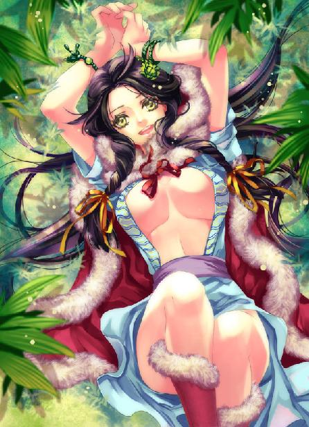
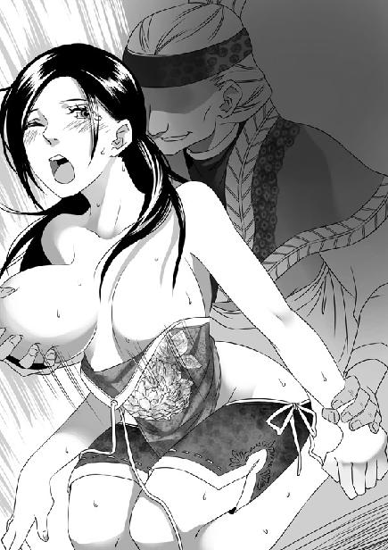
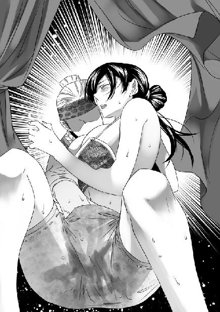

第15集·宫谲墙诡
建康篇（3/8）
出版日期：2010-10-08
【本集内容简介】
曲水流觞、心算神速，程宗扬在云府巧遇的病弱少女云如瑶，原来只是庶出，但对程宗扬几乎知无不言的云苍峰竟对他隐瞒了这个少女的存在，是因为云如瑶的孱弱？身份？还是能力？让云苍峰讳莫如深……
与艺高人胆大的萧遥逸联手同闯晋宫，程宗扬本以为无惊无险，但在太初宫神龙殿所见的一切，却处处透着不祥……
晋国朝廷将要吹起什么样的大风？
※ ※ ※ ※ ※

封面人物：云如瑶

插图：卓云君（1）

插图：卓云君（2）
深夜的玄武湖万籁俱寂，湖面薄雾渐起，远处气势森然的宫城墙堞仿佛掩藏在轻纱后，一片朦胧。
那名杀手始终没有现身，不知道是因为萧遥逸判断失误，还是那杀手耐性奇佳，看着四名同伴被杀仍然能沉得住气。
程宗扬道：“那家伙是不是逃了？”
萧遥逸一手攀着船舷，半身浸在水中，“我跟你赌一把！那人还没走，这会儿就藏在附近。”
只看他懒散的表情，谁也想不到这个风流纨绔的小侯爷，会突然变成煞星，顷刻间接连击杀三名刺客，表情却比杀三只鸡还轻松。
换作别人，一连目睹四起凶杀事件，自己还亲手干掉一个，很难保持冷静。但自从穿越到这个世界后，自己见过的死人大概可以填满两个万人坑，四个人并不算多。
“那个人在哪儿？”
“这我就说不准了。”萧遥逸叹道：“我是第一次被暗杀，没有经验啊。”说着一副很惋惜的神情。
“那你怎么知道还有一个人？”
“我是猜的。”萧遥逸伏在船舷上低声道：“刚才那家伙没有全力逃走，而是故意把我往芦苇荡里面引。我猜芦苇荡里肯定还伏着个人，而且水性不怎么高明。”
“你刚才已经到了芦苇荡边上，怎么不进去看看呢？”
“我不是怕黑嘛……”
程宗扬哼了一声，这小子会怕黑？
萧遥逸用央求的口气道：“程兄？”
程宗扬道：“不行，芦苇荡太危险了，我没那个胆量进去。”
“你就帮兄弟一把吧。”
萧遥逸死拉硬扯，程宗扬只好道：“咱们说好，我只陪你进去，动手的事你自己办。”
萧遥逸笑逐颜开，“那些粗事怎敢劳程兄大驾？娘的，敢来杀我！最好那刺客是个女的，让我给她来个先奸后杀！”
“这事你都干？”
“我就是说说，过个嘴瘾还不行啊？”
两人用竹篙撑起小舟，朝芦苇荡划去。那些芦苇将近一人高，苇叶仿佛水墨绘成，长长伸入月色，在月光中留下浓重的剪影。
忽然舟侧一片芦花猛地飞起，芦苇无声地断裂开来，一把斧轮在月光下旋转着飞来，斧刃在月下闪动寒光。
萧遥逸握住龙牙锥，朝斧轮挑去。这时一个身影从芦苇中飞起，一掌拍向萧遥逸胸口。
萧遥逸右肩微沉，将斧轮挑开，接着低喝一声，左掌递出，与那名刺客对了一掌。
那刺客掌力极猛，颇有些武二的声势，程宗扬自问接不下他这一掌。萧遥逸刚才显露的水准比自己高明不少，接下刺客这一掌并不算难。不过那小子奸诈得很，自己在旁边看得清楚，萧遥逸刚才从衣物中摸了只戒指戴上，这时故意翻转戒面，比拼掌力的同时将戒面拍在那人掌上。
果然，那大汉右掌一震，掌力刚吐出一半，就如受雷殛，无名指生生折断，断指溅出鲜血。
萧遥逸狠狠一笑，掌力疾吐，将那刺客震得跪倒在地，接着龙牙锥从肘后翻出，从那人腕骨中间穿过，向右侧一拧，废了他一条手臂。
萧遥逸森然道：“说！你们是什么人？”
那大汉额头涌出黄豆大的汗珠，然后猛地张开口。
萧遥逸出手如电，一把摘下那人下颔，防止他咬断舌头，接着抬指封住他的气海穴，阻止他运功自绝心脉。
程宗扬松了口气，转头朝舟中看去，只见那两个美妓正惊恐地睁大美目。她们两个只是穴道被封，刚才的一切都听得清清楚楚。
身后一声听不出语调的低吼传来，却是萧遥逸用龙牙锥刺进刺客肩膀，将他骨骼划得咯咯作响。
程宗扬知道这小子要审讯刺客。谢艺的审讯手段自己见过一次，感想就是这辈子都不想再见第二次。萧遥逸和他是一个地方出来的，肯定也好不到哪儿去。如果让这两个娇滴滴的美人儿看见，可太作孽了。
程宗扬向萧遥逸略一示意，指了指两女，然后撑舟避开。
萧遥逸急忙道：“大哥，别走远啊！”
程宗扬没好气地说：“我就在这片芦苇后边，保证你放个屁都能听到。”
两个美妇玉体横陈，雪滑的身子上还沾着刺客血迹。程宗扬用湖水帮芸娘和丽娘洗去血迹，一边微笑道：“刚才的事你们都看到了，来了几个坏人，幸好被我们打跑了。”
两女身不能动，只能眨眼示意，脸上的惊惶却挥之不去。
程宗扬心里也在嘀咕。萧遥逸说看过他出手的人都不能留，摆明是要掩藏身份。但芸娘和丽娘也都瞧见了，总不能把这两个无辜的女子杀了吧？
“那位公子因为钱上的事，跟他们起了些纠纷，不过现在已经没事了。”程宗扬吩咐道：“你们刚才看到的那些最好都忘掉，一个字也不要向外说。”
丽娘和芸娘急忙眨着眼睛，一副惶恐娇怯的美态。程宗扬也不客气，索性把两具玉体都搂在怀里，一边一个摩挲着笑道：“刚才是丽娘唱的曲子。下次我把你们两个都包了，让芸娘唱一段来听听。”
程宗扬一边摩玩两女滑腻的胴体，一边调笑着淡化两女的惊惧，把她们安抚下来。
芦苇另一侧，不知萧遥逸用了什么手段，出人意料地并没有传来多少惨叫。过了小半个时辰，萧遥逸从芦苇丛伸出头来，瞧见程宗扬先松了口气，然后朝他招了招手。
程宗扬跳下船朝萧遥逸走去。那些芦苇多半生在浅滩中，下面全是稀软的淤泥。如果不是踩着苇草，程宗扬真不知道自己该怎么走。
刺客已经不见踪影，多半是被沉到湖底毁尸灭迹。那小子还光着屁股，不过这家伙有够没羞没躁的，看起来比穿着衣服还自在。奇怪的是他神情既不凝重也不轻松，而是带着做梦一样的表情，似乎对他问出来的东西很不可思议。
“程兄知道他们是谁吗？”
“谁？”
“这些人有个名号，叫什么江东五虎，平常在江上讨生意。没想到凭空落下一桩好事，掉到他们头上……”萧遥逸揉了揉鼻子，“我还以为他们是追着孟老大来的，谁知道是有人出钱让这帮小杂鱼来杀我。”
“小杂鱼怎么会到你头上动土？不要告诉我他们是正好路过，见财起意，准备给你来个劫财劫色。”
萧遥逸叹道：“我纳闷的就是这个——他们真是来杀我的。这几个杂鱼已经在青溪守了几天，今天运气好，在湖中碰到我。”
程宗扬顿时松了口气，“幸好他们杀的是小侯爷，不是星月湖的玄骐。”
目标虽然是同一个，这里面的区别却大了。如果他们知道行刺的目标是星月湖的人，派出的杀手肯定要高出两个等级，不会一个照面就被萧遥逸干掉。只有行刺目标是小侯爷这种纨绔子弟，才会找这种不起眼的小人物出手。
程宗扬猜测道：“是不是你诱奸了谁的姬妾，让他恼羞成怒，找人杀你泄愤吧？”
“这事儿我虽然干过一点点，但和她们都没关系。”萧遥逸道：“你怎么也猜不出，出钱让他们杀人的，竟然是个官。”
“谁？”
“白下城的内史刘长之。”
程宗扬摸了摸下巴，“没听说过啊。”
“我也没听说过。”萧遥逸抓了抓脑袋，“不记得我干过哪个姓刘的老婆女儿小妾媳妇什么的。”
“既然有了名字，对着查就行了。”
萧遥逸摇了摇头，“这名字有八九分是假冒的。刚才那家伙说，那人找到他们，给了一百银铢的定金，约定事成之后，再给四百。嘿嘿，五百个银铢就想要我的命，还真便宜。那家伙说，姓刘的紫脸膛，留着大胡子，眼皮上还有个疤——一个搞文书的内史怎么长这模样？”
程宗扬连忙道：“你自己的事自己擦屁股，别找我。”
“程兄，你也太绝情了吧。”萧遥逸委屈地说：“咱们俩可是有同舟共嫖之谊，说到天边也是一等一的交情啊。”
“天知道你干过多少荒唐事，有多少仇家想要你的命。建康城能拿出五百银铢的人，没有十万也有八万，我要跟着你一个一个查，那得查到什么时候？要让我说，出五百银铢要你命的也不是什么大不了的人物。你不理他也就完了。”
“话是这么说，可被人盯着总不是好事。”萧遥逸唉声叹气地说道：“往后我想偷个香、窃个玉，还得防着后面有没有尾巴，那日子就没法儿过了。”
程宗扬笑道：“这我帮不了你。走吧，丽娘和芸娘还在舟上呢。”
萧遥逸一把扯住程宗扬，神情微动。
程宗扬压低声音，“你不会真想把她们两个灭口吧？”
“建康城的人只知道我是个不成器的纨绔子弟，今晚的事要是传扬出去，落到有心人耳朵里，麻烦就大了。”
“她们只是两个妓女，又只知道你是什么公子，不知道你的小侯爷身份。”程宗扬低声道：“你要是不放心，干脆查查她们底细，派个人去她们家里吩咐一声，她们还敢乱说乱动？真要不行，你索性把她们买来当姬妾养着，也比杀了她们强吧？”
萧遥逸琢磨半晌，最后叹了口气，“圣人兄既然吩咐，小弟怎敢不从？就依你好了。”
※ ※ ※ ※ ※
天色黎明，程宗扬才返回玉鸡巷的住处。秦桧一直在门房守着，见他回来露出一丝宽慰，“公子回来了。”
程宗扬顺手拿起一串葡萄，一个个吃着，一边道：“昨晚有什么事吗？”
“有两个商号的小厮来门前打听消息。”秦桧轻飘飘道：“在下已经把他们打发了。”
昨天自己往云家赴宴，晚上就有人来打听消息，建康商家的反应有够快的，不过有秦桧在，想从他嘴里套出话来，只能说那两个小厮运气不好。
“别的呢？”
“小紫姑娘吩咐在下送了一对蛤蚧尾、一些药酒和一段白檀香木过去。”
程宗扬道：“她要那些东西干嘛？”
秦桧微笑道：“紫姑娘行事，非在下所能知。”
那死丫头又在搞什么鬼？程宗扬打了个呵欠，嘟囔道：“我要去睡一会儿，天塌下来也别叫我。”
秦桧跟在后面低声道：“那三位侍女姑娘还在等着公子。”
程宗扬一拍脑袋，想起自己从石超手里得了三个侍女，只不过……
“她们等我做什么？”
秦桧肃容道：“属下也去劝过，但三位姑娘说，她们来时原主人吩咐过，要等公子验过，满意了才留下。所以不敢睡，在等公子回来，好给公子侍寝。”
程宗扬和丽娘一直缠绵到天色微亮，那两个美妓见过他们的手段，侍奉得更是殷勤。后来芸娘也偎依过来，摇着屁股给他品箫卖弄风情，玩得不亦乐乎，这会儿哪还有半分精神。
程宗扬叹了口气，“连你都开我玩笑。告诉她们，如果愿意，就在这里安安心心过日子，我也不拿她们当下人看待，什么时候想嫁人就找个人嫁了。侍寝这事儿，以后别再提了。”
秦桧看了程宗扬半晌，然后笑着躬身应道：“是！”
自己榻上的被褥都让小紫拿去遮掩门窗，程宗扬只好睡在光板床上，闭上眼休养精神。
今天吸收的五道死气，气息并不算很强。程宗扬现在对吸收这些死气已经轻车熟路，早早将其中的杂气过滤了一遍，趁着与丽娘交合的时候发泄出来。剩下不多的气息被他收入丹田，慢慢转化成自身的真阳。
程宗扬不是段强那样的穿越迷，虽然穿越之前对经脉、真气、法术、咒语、修真……这些词汇也耳熟能详，但在自己看来，这些内容有趣是有趣，神秘也很神秘，就是不怎么靠谱。人终究是人，不可能摆脱生物属性的局限，成为神一样的存在。
来到这个世界之后，自己才知道这一切都是真实的。正如那一晚王哲传授他九阳神功时告诉他的一样：人体血肉之躯，蕴藏无数潜能。
自己所在的二十一世纪是一个充斥着科技与信息的时代。正如一个生活在十八世纪的人，无法想象人类会从岩层中开采煤炭和石油，将它们转变为能量，用来照明、驱动机械、即时传输图像……这一切仅仅发生在不足两百年的时间内，一个多世纪的技术积累就彻底改变了人类的生存状态。
换个角度思考：这些发明仅仅是物质条件的改变。人类对自身的认识，似乎并不比五千年前的人类更高明。比如经络的存在与否，对于二十一世纪的人类而言仍然是个无法证实的难题。
这个充斥着真气和法术的世界也许和自己所在的世界有相似的历程。正如自己所在的世界一切都来源于技术的发展，是人类对物质的运用。程宗扬可以想象，在这个世界的变化，源于人类对自身认识的突破。
这个世界的人们因为物质技术的局限，把可以载人的飞行器视为神话。相似的，自己所在的世界囿于对人体自身的无知，将真气、法术视为神话。就像同一颗种子，进化出两株截然不同的植物。
正如电能一直存在于人类生存的世界里，但仅仅在一百年前人类才知道如何使用电能。同样，虽然每个人都蕴藏着无穷潜能，但大多数人都不知道如何开发这些潜能。
程宗扬可以想象，这一切的不同都与王哲在自己丹田内筑下的气轮息息相关。正如蒸汽机的发明和电能的发现，使一切改变人类生活的现代科技成为现实。气轮的出现和相关人类潜能的发展，使得凝炼真气、施展法术成为现实。
一个拥有正常智力的人接受指导后，用三到五年时间就可以在丹田内凝聚出气轮，作为聚炼真气的根基。所以大多修行者都把它视为平常。只有程宗扬知道，第一个凝聚出气轮并把它传下来的人有多了不起。这个意义，也许只有自己在这个世界无中生有地研制出核能才可比较。
王哲给自己打开一扇窗，而殇侯给自己打开一道门。那个老家伙去除了自己身体的隐患，并且根据推测，告诉自己应该如何对通过生死根吸收来的死气进行转化。
在此之前，程宗扬只是本能地吸收死气，转化为生机就随便挥霍出来。直到接受殇侯的指点，才开始将这些生机凝入丹田，转化为自身的真阳。
可惜的是殇侯和王哲一样，对生死根的了解都不多——毕竟这种体质只存在于传说中。殇侯的修为也许与王哲在伯仲之间，但对鬼王峒的认识，这个世界没有人比殇侯更清楚。
修行者将人体内运行却没有形质的物体划分为三类：真阳、真气与真元，大致与九阳神功“养形炼精、积精化气、炼气合神”中的精、气、神相类，分别对应人体的活力、可以施展的力量和最根本的元命。
程宗扬在鬼王峒吸收的死气直接转为真气施展出来，给了殇侯极大的启发。殇侯虽然没有找到方法能够模拟鬼王峒的环境，让程宗扬把吸收的死气直接转化为可以运用的真气，但他退而求其次，先让死气转化的生机经过经脉的运行，转化为真阳。
殇侯的方法虽然不能直接把死气转化为真元，但这一步等于跳过养形炼精，直接把死气转为真阳，在体内稳固下来。自己吸收的死气不用再像以前那样随得随丢，然后在此基础上由精化气、由气化神，等于平白得到大量真阳，修行起来事半功倍。
程宗扬舌尖微微顶住上颚，呼吸变得悠长。通过生死根吸收的死气转为勃勃生机，再汇入丹田，随着气轮旋转带来暖融融的温热感，一点一点与本身的气血融为一体。
气息在经络中流动，按照与凝羽相反的顺序分行六大阴经，最后在丹田凝聚为一。真气在丹田气轮中旋转一圈，接着改变形态，分行六条阳经以及三处阳脉。程宗扬呼吸越发悠长，真气先太一、后九阳，缕缕往来不绝，就像呼吸一样自如。
※ ※ ※ ※ ※
“程小哥好睡。”
云苍峰在程宅熟不拘礼，径直入了内室，见程宗扬在光溜溜的榻上睡着，不由一声长笑。
程宗扬打着呵欠坐了起来，“云老哥，这么早。”
“都该吃午饭了，哪里还早？”云苍峰道：“听五弟说，你昨天在席间一支龙牙锥惊艳四座，后来喝酒时，张侯爷、石少主轮番相敬，连一向不怎么理人的王驸马也向你敬了一杯，这可着实难得。”
程宗扬用力揉了揉眼睛，神智略微清醒。他跳起来，一边洗脸，一边道：“云五爷不会是让老哥来兴师问罪吧？我昨天在席间喝得太多，不得不溜出去逃酒，后来才听说云府的大小姐也在席间露面了。”
云苍峰笑道：“可不是嘛。丹琉是我们云家长女，说来惭愧，我们六兄弟生的儿子不少，女儿就这一个，从小当成男孩来养，结果没有半点淑女的样子。”
程宗扬取了青盐擦牙，口齿不清地嘟囔道：“可惜我运气不好，无缘一睹大小姐的风采。”
云苍峰笑道：“无妨，今日我特意带了丹琉前来拜访。”
程宗扬直接把口里的青盐吞了下去，用变了腔调的声音叫道：“什么！”
“我把那两支龙牙送给丹琉，她一见顿时大喜过望，又听说是程小哥亲手杀了那条巨龙，非要跟我来见见你。”云苍峰笑道：“程小哥，不怪我唐突吧？”
程宗扬喉中又咸又涩，狠狠吞了两口口水，硬着头皮道：“哈哈，这是哪里话呢！哈哈哈！”
云苍峰抚掌笑道：“今日我还带了商会的几名厨子，昨天程小哥在席间没有吃好，今日正好趁此机会再摆一桌宴席，把昨日没去的战威和魏小哥都叫来，咱们再聚一聚。”
好吧，脸丢在自己家里，总比丢得满世界都知道好些。伸头一刀，缩头也是一刀，干脆豁出去吧。
“又教云老哥破费了。”程宗扬把云苍峰送到门口，堆起笑脸道：“昨晚和小侯爷喝到半夜，一身都是酒味，既然是大小姐来了，总该换换衣服。云老哥，你先到前面坐，我一会儿就来。”
一边说，程宗扬一边对秦桧使了个眼色，吩咐道：“叫小紫来。”
※ ※ ※ ※ ※
“死丫头！快给我想个办法！”程宗扬劈头说道：“给我装扮一下，让大家看着还是我，生人看着不是我！”
小紫眨了眨眼睛，“程头儿，你是不是脑壳里进水了？”
程宗扬咬牙道：“云丹琉来了！她若认出我就是在江上吹口哨的那人，以后我这张脸往哪儿搁！”
“不会啊。”小紫一脸天真地说道：“程头儿，你脸皮那么厚，一定不会有事的。”
“我干！”程宗扬叫道：“死丫头！你要不给我想个办法，我立即把你扔给萧遥逸！那小子鬼灵精怪的，活活是头小狐狸！正好跟你这死丫头配一对！”
小紫眼眶立刻充满泪水，凄声道：“主人，不要赶小紫走……”
“哼哼，怕了吧！”
只见小紫一脸悲哀地扑过来，“砰”的一拳打在他的眼窝上。
程宗扬眼冒金星，身体晃了几下才站住，咆哮道：“死丫头，想造反啊！”
小紫眨了眨眼睛，充满眼眶的泪水奇迹般消失不见，笑盈盈道：“你不是要让大家看着还是你，生人认不出来你吗？你瞧，眼窝都青了呢。”
程宗扬揉了揉肿痛的眼睛，拿过镜子一照，左眼果然青了一大块。有这个青眼窝掩护，熟悉的人自然还认识，但云丹琉只是在江上匆匆见过一面，未必能认出来。这易容术倒简单，只不过太痛了点。
“程头儿，”小紫柔声道：“要不要人家再给你右眼补一拳？”
程宗扬心里升起一股寒意。再让这死丫头打一拳，说不定连自己眼珠都被打出来。
“不用了，这就挺好！”
小紫做了个鬼脸，轻笑道：“程头儿，我新收了个女儿，你要不要看？”
程宗扬失笑道：“你？”
这死丫头好像刚过十五岁的生日，才断奶几天，就收了个女儿？突然间，程宗扬想起了一件事，精神顿时振奋起来，“那个八婆？我干！死丫头，你真有一套！”
小紫得意地翘起下巴，“那当然。”
程宗扬一脸兴奋地搓着手，“那个死八婆想要我的命，这么快就投降了？嘿嘿，我要在床上一边干她，一边让她给我赔礼道歉！”
小紫白了他一眼，“大色狼。”
“什么大色狼？你见过我这么倒霉的色狼吗？你瞧我喉咙被她刺的这一下，差点儿就没命了。”
卓云君逼问九阳神功下落时，险些把自己喉管切断，程宗扬想起来还心有余悸加怒火中烧，“那个贱人！我救她一命，却被她反咬一口，差点把命赔进去，一加一减，她等于欠我两条命。只干她几次太便宜她了！”
小紫用诱惑的口气地挑逗道：“程头儿，想不想看卓美人儿的光屁股？”
程宗扬摸了摸下巴，“看完有奖励吗？”
“主人想要什么奖励？”
“看完让她给我爽一下！”
“程头儿，你好着急哦。”小紫娇声道：“果子要长熟了才好吃。她现在只有七分熟，要再长几天，等熟透了才好玩。”
看着卓云君那个骄傲的大美人儿被小紫调教，其实挺有趣。不过只能看不能摸就很让人无语了。现在宅中里里外外也有几个女人，但卓云君不让碰，小紫不能碰，那三个侍女自己又不愿意以大欺小地把她们幸了。到时真要看得上火，连个泄火的对象都没有，只能干挺着，还不如不看。
程宗扬板着脸道：“等你调教好再说。还剩三天时间，到时候你再给我推三阻四，哼哼哼哼……”
※ ※ ※ ※ ※
今日是家宴，用不上一人一席那么讲究。按照程宗扬的意思，大伙儿直接在院中的大槐树下摆了一张大桌。除了在前面看守走不开的几个，吴战威、小魏、秦桧、吴三桂，还有从南荒跟来的殇侯手下都围着桌子坐下。十几个人聚在一起，显得热闹非凡。
右侧的主位还空着，云苍峰坐了上首主宾的位子，旁边是一个红衫少女。程宗扬快步走过去，先向云苍峰打声招呼，然后笑道：“这位就是大小姐了吧？久闻大名，如雷贯耳。”
程宗扬换了件刚洗过的外衣，腰间左右各挂把刀，显得神采飞扬，只不过左眼一个大大的青眼窝，平添了几分狼狈。
云苍峰指着程宗扬的青眼窝道：“程小哥，你这是？”
程宗扬打了个哈哈，“不小心碰了一下，见笑见笑。”
程宗扬留神看着云丹琉的举动，他挂了两把刀不是摆酷，完全是为了保命。
他已经计算好了，一旦她有拔刀的动作，自己立刻双刀出鞘，先用一招“虎战八方”护住周身要害，等秦桧和吴三桂出手拦截，接着再一招“虎视鹰扬”迅速脱离险境，然后撒腿就跑，能逃多远逃多远，回头再找小紫算账。
云丹琉微微露出一丝讶色，似乎看出些什么又不好确定。犹豫片刻，她起身抱拳道：“听伯父说，公子在南荒大展神威，力斩巨龙。丹琉最仰慕英雄人物，今日一见……果然名不虚传。”
这丫头片子身材果然高，自己身高已经不算低了，她比自己还要高出少许，两条美腿又直又长，流露出勃勃英姿。今天云丹琉穿着一袭火红的衫子，眉峰挑起，一双明亮的眸子英气逼人，衣内隐约能看到那件精致的银甲，胸部高高耸起，胸甲间嵌着一块火红的宝石，里面仿佛有火焰隐隐流动。
发现云丹琉没有认出自己，程宗扬暗自庆幸躲过一劫，随口寒暄几句，侍女已经送上酒菜。
程宗扬身边这些人打打杀杀算是顶尖，要论做菜的手艺，全加起来也就是童子军野炊的水准，果腹还行，待客就太寒碜了。还是云苍峰考虑周全，这次的厨师、菜蔬，包括使用的炊具、木炭，都是他从云氏商会带来的，做出的菜肴一看就是大家手笔。
吴战威早已喜上眉梢，盯着云苍峰带来的美酒口水直流。等两边寒暄完，他立刻拿起碗，先干了个见底，舒服得眯上眼，仿佛浑身八万四千个毛孔都一同张开，同时喊出一个“爽”字。
从殇侯那里带来的几名护卫都不是外人，这些天下来大家已经混熟，也不讲那么多礼数，程宗扬举碗说了声“干！”云苍峰领头，众人都举碗饮尽。
小魏拿起吴战威的空碗，低声笑道：“走的时候祁四哥说过，让我盯着你，一天最多半斤酒。吴哥，这一碗我给你满上，再有一碗可就够数了。”
小魏去拿酒瓮，旁边却伸来一双纤纤玉手，捧着银制酒壶替他斟满。小魏愣了一下，只见那侍女晕生双颊，轻声道：“公子慢用。”然后退到一边。
石胖子送来的三个侍女分别叫雁儿、莺儿和鹂儿，这些金谷园的侍女不但容貌出众，席间传酒布菜更是训练有素。吴战威这样刀头舔血的粗汉，平常三块石头支个锅就是一顿好饭，什么时候见过吐根鱼刺就有人收的细致手艺？被莺儿姑娘在后面伺候，顿时没了脾气，拎只鸡腿，使出绣花的功夫慢慢啃着。
程宗扬叫道：“再拿三张椅子来，你们几个也过来坐。吴大刀！一点眼力都没有！往旁边挪点，让莺儿姑娘坐下！”
几名护卫同时搬起椅子往旁边挪去，“轰”的一声，二十四条椅子腿在地上只发出一声响，动作像刀切一样整齐划一，一下空出半张桌子来。
云丹琉目光闪闪看着程宗扬。晋国男女除了至亲极少同席宴饮，像这样与下人同坐一席更是闻所未闻。
看着云丹琉眼中的讶色，程宗扬干笑道：“这些都是粗人，粗人！”说着他虎着脸呵斥道：“挪个椅子还砸那么响？一点礼貌都不懂。”
几个人低着头闷声不响，只有秦桧悄悄朝程宗扬使了个眼色。程宗扬没有在意，一边招呼旁边侍女，“你们三个，就挨着云大小姐坐吧。”
三名侍女互相看了一眼，异口同声地说道：“奴婢不敢。”
“这又不是金谷园，有什么敢不敢的？”
程宗扬这才注意到秦桧一个劲儿地朝自己使眼色，他琢磨了一下，然后拍了下脑袋，恍然大悟地对云苍峰说道：“云老哥，我这么做是不是有点不大合适啊？”
云苍峰一直含笑不语，这时才大笑道：“合适！怎么不合适？三位姑娘，一起坐吧。”
三女是奴婢的身份，让她们和客人同席是大大的失礼，换了别人早已拂袖而去。云丹琉微一错愕，等她意识到程宗扬并无恶意，不禁对这个多少有些狼狈的年轻人多了一分讶异。
秦桧微笑道：“云大小姐请别见怪，我们程少主一向率性而为，不为礼法所拘。若有失礼的地方，请大小姐多海涵。”
云丹琉爽朗地说道：“这有什么？我在海上的时候，也是大家一同吃饭。有时困在海上，几个人分一碗水喝也是有的。三位妹妹都过来坐吧。”
三名侍女迟疑半晌，这才小心地坐下。
云苍峰捋了捋胡须，笑道：“在座的都不是外人，当日在南荒与龙神一战，这些兄弟都有份。大伙生死交情不用多说，难得程小哥更是重义之人。”
提到南荒的往事，在座的除了四名女子，众人都亲历过屠龙一役，话题一下热络起来。
说起吴三桂指挥护卫们参战，秦桧亲手施放大黄弩，击中龙神的眼眶。云丹琉惊讶地问道：“大黄弩是汉军的绝密利器，你们是从哪里得来的？”
“在下曾观摩过羽林天军在上林苑的车弩演练，依样仿制了几具。”秦桧谦虚地说道：“较之原器，威力是远远不及了。”
程宗扬心下暗赞，这家伙真不愧是奸臣胚子，撒起谎来，表情全无破绽。
秦桧这么说无非是掩饰这些大黄弩的真实来历。但大黄弩将纯粹的机械力量发挥到极限，制作技术是汉军绝密，看几眼就能仿制出来？以为汉军的工匠都是白痴啊。
云丹琉更是惊疑，“竟然是你们仿制的？我们本来想在舱船上安装几具以增强远程攻击，但无论花多少钱都买不来。你们既然能够仿制，可否给我们制作几具？”
好嘛，有客户上门订货，这下牛皮吹破了。程宗扬笑眯眯看着秦桧，看他怎么收场。
秦桧不动声色，轻轻一脚把皮球踢给程宗扬，“大小姐若是有意，可以与鄙少主商议。”
程宗扬也不含糊，接口道：“不过是几架大黄弩嘛，这点小事就交给会之去办，保证大小姐满意。”
云丹琉唇角弯起，高兴地说道：“那就多谢了。”
秦桧捧了个烫手的热山芋，脸上却没露出半分为难，不动声色地转开话题，从容笑道：“听说云三爷的几支龙牙，都给了大小姐？”
“不错！”云丹琉高兴地说：“这几支龙牙帮了我们大忙。”
秦桧道：“难道是海上不太平吗？”
云丹琉看了云苍峰一眼，见他微微点头才说道：“这一趟出海，我们损失了三条船，对外面说是遇到风暴，其实是被海盗劫走。”
“海盗？”秦桧更觉惊讶，“哪里的海盗敢来拦截贵商会的船队？”
云丹琉道：“我们的海船虽然坚固，但船体太大，船速和灵活性都不及海盗的轻帆，一旦落单，很难从海贼手中逃脱。”
程宗扬见过云氏商会的泛海巨舰，十几条巨舰一字排开，一般小贼早就躲得远远的，这些海盗竟然能从他们手里夺走三条船，称得上实力不凡。
旁边人也有相同的疑问，吴三桂问：“大小姐是在哪里遇上海盗？”
“海棠花环附近。”
秦桧倒抽一口凉气，“赤鲨？”
云丹琉有些意外地说道：“秦先生见闻如此广博？正是赤鲨。”
程宗扬对海上没多少了解，听得莫名其妙。秦桧解释道：“海棠花环是船队通往南海的必经之路，由于礁石露出海面，酷似海棠花编织的花环，被人称为海棠花环。”
“赤鲨呢？”
“赤鲨是南海最大的一支海盗集团，用赤红的鲨鱼作为旗号。赤鲨用的船只通常不超过三丈，速度极快，听说里面一些海盗还有鲛人血统，寻常商船打不过也逃不掉，见到赤鲨旗，只能束手待毙。”
秦桧转头对云丹琉道：“我在南荒听说，有一支船队在海上与赤鲨交手，领头的女首领临阵斩杀赤鲨悍将屈无伏，想来就是大小姐了？”
云丹琉唇角好看地向上挑起，“侥幸而已。”
秦桧肃容道：“屈无伏在海上凶名赫赫，大小姐能斩杀此凶，真可谓女中豪杰。赤鲨海寇即便抢了三条船也得不偿失。那些龙牙，想来大小姐是要用在船上了？”
云丹琉道：“海战与陆战不同，以冲、射为主。远程以弓弩射击，近战则是船首冲撞。那些龙牙锋利无比，装在舰首便是近战时的无敌利器。”
秦桧抚掌道：“大妙！那些龙牙原本冗赘难用，云大小姐装在船上立时变废为宝！即便赤鲨群寇也难撼其锋。”
云丹琉说起海战立刻眉飞色舞，吴三桂长于骑射，对水战不在行，倒是秦桧，什么都懂一些，谈起海战也头头是道，两人你一句我一句说得热闹非凡。另一边吴战威和那些护卫也聊得投机，却冷落了旁边几个少女。
雁儿几个头一次和一群男人同席吃饭，一个个都羞窘得抬不起头来。程宗扬却恍如未见，只一味劝酒。
虽然没有被云丹琉当场认出，但程宗扬心里一直忐忑不安。为此他连自己屠龙的壮举都没有多说。
云苍峰倾身低声道：“几位姑娘连筷子都没动，这顿饭吃得委屈。”
程宗扬微笑道：“我是故意的。一回生二回熟，刚开始不习惯，以后天天这样就好了。唉，我现在也越来越觉得让人伺候着挺舒服，再摆出主仆的架子，只怕往后真会变成石胖子那种废物。”
云苍峰点了点头，良久道：“你有这份心思，真是难得。”
程宗扬笑道：“我不是那种生下来就带着爵位的世家公子，自己有多少斤两我自己心里有数，总不好刚过两天安稳日子，就把自己当人上人了。对了，云老哥，那件事你们查得怎么样了？”
云苍峰摆了摆手。在座的虽然都是心腹，但此事牵涉宫中，知道的人越少越好。
云丹琉喝起酒也颇为豪爽，酒到杯干，不多时双颊微显酡红。席间说起众人用南荒带回的龙筋制成弓弩，云丹琉美目顿时异彩连现，立刻拉着秦桧要去看看那些弓。
云丹琉一走，程宗扬如蒙大赦，交待二吴招呼众人，便与云苍峰一同到书房细谈。
“宫里禁军有八千多人，查起来颇费时日，眼下还没有线索。”云苍峰道：“倒是账目又清查出一些，其中有一笔兑换金铢的数额极大。”
云苍峰手指敲着书案，“更奇怪的是那笔金铢直接被人运走，没有再运回内府。如果鄙商会所查无误，现在内府已经没有多少钱财可以动用，帝室再有大额支出，只怕要借贷了。”
程宗扬失笑道：“皇帝还要借钱？晋国商税一年下来数额就不小，那些钱还不够花吗？”
云苍峰笑道：“程小哥有所不知。商税、农赋都是国家收支，由尚书省的度支曹管理，只能用于公事开支。皇帝自己花钱，是靠内府收入。”
程宗扬还真不知道这个，原来皇帝也要公私分明，不是想花钱就能花的。
“那笔钱不会是飞了吧？”
“若是靠钱庄兑换，自然有迹可寻。那笔金铢足有五万枚，以两辆马车载运，除非找到载运的人，否则很难查出下落。五弟现在正动用他的关系，看内府当时是谁出面办理此事。过几日便会有线索。”
六朝通行的钱币有铜铢、银铢和金铢三种。三者规格体积相等，但重量和价值相差极大。程宗扬估算过，一枚铜铢的重量在五克左右，银铢是六克，而同样体积的金铢重量达到十一克。三者的兑换比值为一枚金铢兑二十银铢，兑两千铜铢。
由于金铢价格高昂，日常交易中大多数人都习惯使用铜铢，并把一千枚串为一贯。在建康这样的大城，银铢的使用量也相当可观，但使用金铢交易的仍是少数。毕竟像张少煌、王处仲那样动辄上千金铢，相当于数百万钱的大手笔并不多见。
因此金铢一般作为存储货币，比如建康与临安之间的大额交易，一笔生意可能要牵涉到上千万钱，若全以铜铢交割，仅货币的重量就达五十吨。以金铢计价，总数不过五千枚，重量不超过六十公斤，能起到定额支票的作用。
萧遥逸的身份一直是秘密，程宗扬也不好告诉云苍峰自己准备潜进宫里探查。正琢磨间，云苍峰微笑道：“丹琉从小就好强争胜，以前经常和她几个哥哥闹别扭，心性倒是不坏。这些年在海上漂泊，比从前也沉稳许多。”
心性好坏自己不知道，脾气可是够火爆的。程宗扬试探道：“大小姐是不是还有个姑姑？”
云苍峰神情一凛，“绝无此事！”
程宗扬碰了一鼻子灰，心里更觉纳闷。云苍峰一口否认，情况似乎不那么简单。但云苍峰对自己一向知无不言，连临川王的事都没有瞒自己，何必在这件事上撒谎呢？
程宗扬笑着转开话题，“昨天筵席上看了大小姐带回的珍宝，却没有见到特别出彩的，是不是老哥藏私了？”
云苍峰也露出笑容，“果然瞒不过你。你既然要开珍宝行，老哥总不好和你争。你们赴宴之前已经有一船货物先送往临川王府。”
程宗扬微笑道：“云老哥这一注下得有些大吧？”
云氏和临川王走这么近，显然在他身上投了重注。一旦出岔子，恐怕收手也没那么容易。
云苍峰低声道：“刚才我提到还查到一些内府购置的货物，程小哥可知道是什么？”
“什么东西？”
“药材。”云苍峰冷冷道：“一大半都是春药的材料。看来我们这位陛下，一年来在宫里是夜夜春风。”
程宗扬恍然大悟。晋帝精神不济已经是公开的秘密，云氏查出宫里暗中购置大量春药，推断出晋帝在宫内毫无节制地大肆纵欲，很可能命不久矣。此时抢先下注，将来的得利必然丰厚异常。
云苍峰毫不隐瞒地说道：“陛下至今没有子嗣，一旦龙归大海，按道理该兄终弟及，临川王大位有望。”
虽然殇侯让自己专做晋国宫廷的生意，好接近宫中权贵，但程宗扬对晋国政局既不了解，也无兴趣，笑道：“那就先祝云老哥心想事成了。”
云苍峰苦笑道：“此事岂是易与？若让我自己选择，宁愿与丹琉一同出海，游历天下，只是为了云氏家业，不得不如此。唉，丹琉也是……”他叹息一声，摇了摇头。
“我听说大小姐要到宫里任职？”
云苍峰点头道：“这是陛下亲下的诏令。不知他从哪里听说丹琉力斩海贼的事情，命她入宫担任侍卫。”
“大小姐一旦入宫，要打探消息就方便多了。”
云苍峰叹道：“眼下还不知道是否进入内宫。若是担任内宫侍卫，就不用我们整日在外面猜测了。不过若非此事由五弟极力主张，否则我绝不会同意。”
程宗扬心里明白，想必云苍峰看到宫里购置的药物，生出一丝警觉，看出此事不那么简单。
※ ※ ※ ※ ※
黑沉沉的室内只有一盏油灯散发出微弱的光芒。案旁的椅上坐着一个妇人，涂满脂粉的面孔被灯光映得惨白，妆扮庸俗不堪。但如果仔细看去，会发现她隐藏在阴影中的眼睛灵动异常，不时流露出与她妆扮不相衬的狡黠光芒。
她跷着脚，手里拿着一把蒲叶做的扇子，在她脚前的地上放着一根门闩。门闩后站着一个美貌妇人。
那女子穿着一件艳俗的抹胸，抹胸是用最普通的绢纱制成，质地薄劣，贴在身上又薄又软，葱绿色的绢丝上绣着一朵硕大的牡丹花。牡丹内，一只黄腰黑尾的蜜蜂正在花心采蜜，周围飞舞着一群蝴蝶，暗示着“蝶戏牡丹、蜜采花心”的隐喻。
抹胸形制窄短，给一个未发育的小女孩儿穿正合适，但穿着它的是一个成熟美艳的妇人。比身材小了一号的抹胸只能勉强掩住身体正面，那女子两团高耸的雪乳不仅将抹胸高高撑起，还在抹胸上缘和左右两侧露出雪乳圆润的弧线。
在她下身，穿着一条同样质地的亵裤。由于亵裤太过短小，无法完全拉到臀上，裤腰只能绷在雪臀上缘，雪滑的臀沟几乎露出半截。裤腿更是只及大腿的一半，下面裸露着白生生的小腿和玉足。
程宗扬肚里暗笑。这又是小紫捉弄人的手段，故意拿小号的亵衣让这个熟艳的大美人儿来穿。自己只能看到卓云君的背影，无法看到她的表情，但想来不会很好看。
云苍峰到前面继续宴饮，程宗扬却不想那么早去见云丹琉，趁着这点工夫不如看看小紫怎么调教姓卓的贱人。
他半身钻在被褥下，眯着一只眼睛，透过窗框的缝隙向内窥视。由于光线都被背后的被褥遮蔽，真气被制的卓云君没有发现异样，但小紫的目光几次瞟来，已经发现自己在窗外。
卓云君第一次以身着贴身内衣的姿态示人，又小又紧的亵裤紧紧包裹着浑圆丰满的雪臀，薄到近乎透明的丝绢贴在肌肤上，羞态毕露。身前的抹胸更是暴露，就像悬在丰挺的乳上，随时都会滑落。
卓云君双颊像火烧一样难堪，这种打扮就像一个艳俗的下等妓女卖弄风情，哪里还有半分以往的逼人风采。她忍羞屈膝，跪在门闩上向面前的妇人低声道：“女儿见过妈妈。”接着她俯下身，双手平伸，额头贴在地面上，“妈妈万福。”
那条抹胸只用一条丝带系在颈中，一俯身便从身上滑落，美妇白滑的上体几乎整个裸露出来。由于卓云君跪在门闩上，俯身时臀部比平常翘得更高，紧窄的亵裤向下滑动，浑圆的美臀大半暴露出来，在黑暗中白花花得耀眼。
卓云君在地上伏了片刻，然后直起腰，双手收回放在膝上。接着再次俯身，以一模一样的姿势向那女人叩头，重复道：“女儿过见妈妈，妈妈万福。”
一连做了十余次，那妇人终于露出一丝满意的笑意，沙哑着嗓子道：“乖女儿，过来吧。”
卓云君双膝在门闩上跪得又僵又硬，身子一晃险些栽倒。她吃力地挪动双膝，膝行到那妇人身前，然后扬起脸露出笑容。
“我的心肝肉儿……”那妇人肉麻地说着，一手揽住卓云君的颈子放在自己腿上，一脸慈爱地抚摸着她的粉颊。
卓云君心里几乎滴出血来，脸上却不得不挂出讨好的笑容。
小紫手掌用黄连水染得发黄，又用鱼鳔胶做出皱纹和硬茧，就像常年劳作过一样又粗又硬，这时在卓云君光洁的玉脸上揉弄，看她眉头不时皱起又强颜欢笑的样子，不禁唇角翘起。
小紫手掌贴着卓云君的面孔一路向下，抚摸过她白滑的玉颈，最后伸到她胸口，粗着喉咙道：“乖女儿，让妈妈揉揉你的奶子。”
卓云君挺起胸，那只粗硬的手掌从她抹胸上缘伸入，抓住她柔软的乳房，然后把抹胸扯到乳下。
卓云君年纪虽然不轻，但修道之人身体保养极好，看起来比实际年龄年轻二十岁。她双乳被扯出，雪团般挤在抹胸上缘的空隙间，高高耸起。那对乳房仍保持着丰挺姿态，只是乳肉更加丰腴柔软，白光光又滑又腻。
小紫抬眼一笑，捻住卓云君一只乳头用力拉长。
程宗扬暗骂一声，这死丫头！明知道自己在外面偷窥，还故意来挑逗自己。
小紫捻住卓云君一颗乳头，一边在指间揉扯，一边教训道：“你年纪大了，只怕嫖你的客人不满意。到了榻上要骚浪一些，把你的奶子屁股让客人多玩玩，客人玩得高兴，说不定还能多给你几个钱。”
卓云君玉脸时红时白，强笑道：“女儿知道了……多谢妈妈。”
小紫等了片刻，然后挑起眉梢斥道：“死娼妇！比猪还蠢！白长了一对又骚又浪的贱奶，连卖弄也不会？”
卓云君被她拧住乳头，痛得花容失色，只好说道：“妈妈万福……多谢妈妈玩女儿的奶子……”
两颗柔软的乳头被那妇人揉扯得充血鼓胀，硬硬翘在雪团似的美乳上。小紫捏住她一只乳房，揉弄地说道：“乖女儿，摇摇奶子。”
卓云君咬紧牙关，屈辱地挺动身体。她墨绿的胸衣被褪到乳上，裸露出两团白光光的乳房。一团高耸的雪乳被那妇人握在手里揉捏得不住变形，另一边乳房随着她身体的挺动，一点一点摇晃起来。
微弱的灯光下，白滑的乳肉仿佛一团腻脂，带着丰腴的曲线沉甸甸地上下抛甩，充血的乳头挺在乳上，仿佛嵌在白玉上的红宝石。
小紫戏谑地朝程宗扬眨眨眼，然后喝道：“再甩高一些！”
在那妇人的喝令下，卓云君赤裸着浑圆的雪乳，尽力甩动。乳房起落间，发出“啪啪”的肉响。
“下贱的娼妇！把奶子甩个圈！”
卓云君指尖死死掐进肉里，乳房来回摇甩，在胸前划着圈子。雪滑的乳肉颤动着，乳根不时拉紧。
卓云君脸上虽然堆着笑容，低垂的目光却像冰雪一样寒冷。她本身是太乙真宗有数的高手，修为精深，寻常克制功力的手段她迟早会看出破绽，找到破解的手段。但那个年轻人不知用什么手法散去自己的功力，无论丹田还是经脉内都空荡荡，找不到一丝真气存在。
卓云君用眼角的余光察看周围的器物。这妇人一面粗鲁庸俗，另一面又凶狠狡诈，每次离开都把房门牢牢反锁住。自己反复试过，这间房屋的窗房都被封死，无法打开。唯一逃脱的机会只能在这妇人出现的时候。
玩弄良久，小紫才松开她的乳头，抚着她的乳房笑道：“好乖的女儿，果然是个天生的淫材儿，奶子甩起来又骚又浪，让妈妈都看得心头起火。”
那妇人放开她，转身调弄案上的两只罐子。
卓云君笑容僵在脸上，藏在身后的手掌微微发抖。她在等待一个机会，而这个机会终于来了。
卓云君摸到脚下的门闩，几日来的愤怒、恨意、痛楚和屈辱都涌上心头。她猛然挺身，举起门闩倾尽全力朝那妇人脑后打去。
程宗扬冷笑一声。这贱人修为被制，灵觉大幅衰退，竟然看不出小紫是故意露出破绽，引她出手。
小紫朝程宗扬扮了个鬼脸，然后旋身劈手夺过门闩，顺势一扯，卓云君便横飞出去。
“砰”的一声，卓云君跌倒在地，发出一声痛叫。她赤裸的双乳撞在地上，传来一阵碎裂般的痛意。
小紫一把抓住卓云君的头发，门闩带着风声狠狠落在背上。卓云君“呃”的低叫一声，内脏仿佛被这一记门闩打得翻滚错位。
门闩雨点般落下，每一记都让卓云君身体一阵颤抖，带来皮开肉绽的剧痛。耳边充斥着妇人的痛骂：“死娼妇！喂不熟的骚母狗！敢动手打老娘！看我不打死你这个贱货！”
卓云君强挨了几下，终于忍不住哭叫道：“妈妈，饶了女儿吧！不要打……不要再打了……啊呀……”
程宗扬在窗外看着，勃起的阳具愈发胀硬。那美妇抹胸滑到一边，赤裸着一双白生生的乳房，被小紫打得满地乱滚，葱绿的亵裤几乎褪到臀下，露出白花花的美臀。他看出小紫确实没有用力，但再轻微的痛楚在卓云君身上都被放大数倍，使她无法承受。
看着卓云君吃痛的惨态，程宗扬心里就一个字：爽！明知道打不坏她，但那贱人痛楚的样子可一点都不掺假，不仅有足够的报复快感，而且让人欲念勃发。此时此情，程宗扬突然发现蜡烛和皮鞭也是很有内涵的道具……
他仿佛看到自己一手皮鞭、一手蜡烛，脸上带着残忍而淫贱的狞笑，而卓云君这贱人白花花的肉体被绳索捆绑着，丰腻的乳房上滴满烛泪，光溜溜的大白屁股上印着鞭痕，在自己面前不住挣扎惨叫……
程宗扬看得火起，忍不住从被褥下钻出来。卓贱人这会儿力气全无，就连一个小女童也未必打得过，自己何必非要傻乎乎等到瓜熟蒂落？
程宗扬禁不住吹了声口哨。这会儿闯进去直接在地上干她，谅她也反抗不了。
“飕！”
一支利箭抛物线飞来，紧贴着他的脖颈扎在窗棂上，箭尾的雕翎不住抖动。
“当心！这龙雕弓力道极大，大小姐不要手滑了！”
“刚才那一箭射到哪儿了？不会伤到人吧？”
“看方位箭矢应该飞到后院，那边无人居住，应该不会伤到人。”
秦桧和云丹琉一边说一边奔进来。
程宗扬靠在窗户上，脸上毫无血色，脖颈上被箭锋划破的伤口，鲜血缓缓流出。这算什么？报仇吗？你有种一箭射死我得了，暗箭伤人算什么好汉！
云丹琉停下脚步，惊讶地张大嘴巴。
秦桧吓了一跳，风一般疾掠过来，等看清程宗扬的伤势才松了口气，说道：“公子恕罪，在下……”
程宗扬一摆手，打断他的话。
云丹琉讪讪道：“我刚才试……”
程宗扬急忙做了个手势，让她闭嘴，然后拔腿就走。
云丹琉和秦桧对视一眼，连忙跟了过去。
到了院外，云丹琉不好意思地说道：“程少主，刚才我试用贵府的龙雕弓，不小心手滑……”
程宗扬抹去脖子上的血痕，没好气地说：“过去的事就不用再提了。”
云丹琉拱手道：“程少主大人大量。今日之事是丹琉莽撞了，得罪。”
得罪了能怎么办？别说自己心虚，就是冲着云苍峰的面子也不好说什么，程宗扬只能打个哈哈。
秦桧为人七窍玲珑，天生的玻璃心肝、水晶肚肠，看程宗扬的举动，心里立刻明白八九分，笑道：“区区小事，大小姐不必在意。我们到前面试弓。”
云丹琉走出几步，忽然回过头，“刚才的口哨是你吹的吗？”
程宗扬强笑道：“过去的事就不用再提了。”
云丹琉目光闪闪地打量着程宗扬，最后落在他瘀肿的左眼上，唇角缓缓挑起，然后转头离开。
秦桧朝程宗扬一拱手，微微笑道：“云执事和大小姐由在下招待，断不会误事。”
这家伙不用点拨就心头雪亮，看出这院子有蹊跷。有这么个得力的手下，自己还能说什么？
等秦桧离开，小紫施施然出来，“程头儿，你又来偷看了。”
程宗扬道：“还说自己把她打服了呢，卓婊子这一记耳光打得真响。”
“程头儿，你抓过鱼吗？再小的鱼抓到岸上都要蹦几下呢。何况是在太乙真宗的修道大美女呢？”小紫笑着眨了眨眼，“程头儿，卓婊子的奶子好玩吗？”
程宗扬臭着脸哼了一声，“一般般。”
小紫略带讥讽地说道：“当然没有你的小香瓜好玩了。”
提起小香瓜，程宗扬就一阵窝心。自己几次想询问萧遥逸光明观堂的情况，都没有找到合适的机会。不知道小香瓜被潘姐儿带走后，现在如何了？
程宗扬板着脸道：“你在她脖子上摸来摸去的，有瘾啊？”
“大笨瓜。人家是探她的血脉运行，看她还有多少力气。”
难怪这死丫头每次都要摸摸她的脖颈。程宗扬转过话题，“喂，你不问问我和孟非卿见面，说了些什么？”
“这有什么好猜的？肯定是他们日子过得好端端的，突然多出一个累赘要他们照料，觉得头痛，不知道该怎么办才好。”
这死丫头就有这本领，不管什么好事，让她一说就赤裸裸地只剩利益，没有半点温情。
“这是孟非卿给你的见面礼。”程宗扬拿出那张地契，诱惑道：“你肯定没见过那么好的房子。”
“不要！”小紫理也不理，一甩帘子回到房内。
※ ※ ※ ※ ※
自己的院子就跟走马灯似的，云苍峰刚告辞，萧遥逸就带着随从来了。
那家伙惊讶地张大嘴巴，“程兄，你又化装了？”
程宗扬正在院子里用湿巾敷眼上的青眼圈，叹道：“这回是真的。眼珠差点都被打出来。”
“谁打的？”
“哦，是撞的、撞的。”
萧遥逸看了看周围，“紫姑娘呢？”
“她在后面。你别担心，那死……那丫头好得很呢。这会儿离天黑还早呢，有什么事？”
萧遥逸满脸春风立刻垮了下来，沉声道：“那两个粉头失踪了。”
程宗扬心里“咯噔”一声，“丽娘和芸娘？”
萧遥逸最后还是听了程宗扬的劝说，没有杀那两个美妓灭口。天亮后，萧五带着那条小船回来，两女乘船离开。萧遥逸吩咐萧五跟在后面，找到她们是哪家的女眷，再根据情形看是出言警告，还是直接把她们收为姬妾。谁知道小船在芦苇荡中三拐两拐，竟然失去踪迹。
程宗扬皱眉道：“芝娘总该知道吧？”
萧遥逸道：“我已经让人去找过。芝娘说那两个粉头是自己寻来的，讲的和昨晚说的差不多，因为丈夫生病才夜间出来卖身。芝娘见她模样长得标致，又解风情，才留下来，在画舫断断续续做了十几日，平常不在船上，有客时才出面。”
“她们即便不在船上也该有个地方吧？不然有了客人，芝娘怎么通知她们？”
“芝娘说，只要派了船，在溪口挂出画舫的花灯，她们就会出来接客。”
程宗扬立刻道：“那她们肯定住在溪口附近。”说着他倒抽一口凉气，“我记得青溪附近就是乌衣巷，她们不会是王谢那些世家大族的女眷吧？”
难怪萧遥逸表情像吃了大便一样难看。如果丽娘她们真是来自世家大族，略微透出口风，他的真实身份就泄漏无遗了。
“我已经让人去查了。”萧遥逸埋怨道：“早知道就不该放她们走。唉，如果我不听你的鬼话，一刀一个，这会儿也不用伤脑筋了。”
“明摆着你自己也舍不得动手杀人，这会儿把责任都推到我身上，太不够意思了吧？”
萧遥逸委屈地说道：“你让我找个理由推卸一下责任都不行？”
“你准备怎么办？”
萧遥逸振作精神，“溪口左岸是那些世家大族的聚集地。我让人继续去查，看哪家的主人这么没用，让老婆出来做粉头。”
“右岸呢？”
“右岸是宫城，用不着去查，倒省点力气。”萧遥逸道：“至于画舫那边，程兄，今晚咱们一同去，让芝娘派船挂出花灯，看她们两个来不来。”
程宗扬道：“今晚恐怕你要自己去了。我和云三爷约好一会儿要去云家拜访，只怕晚间赶不回来。”
萧遥逸欲言又止。
程宗扬讶道：“小狐狸，你还有事情瞒我？”
萧遥逸道：“其实我在她们两个身上留了一点特殊香料，本来不会把人追丢，但只跟了一顿饭时间，香味就消失无痕。”
“也许她们是洗了呢？”
“能洗掉还叫特殊？那种味道一般人闻不出来，要十二个时辰才会消失。”萧遥逸拧起眉头，用折扇敲着掌心说道：“能把我的寻迹香去掉，那个人手段不简单。”
程宗扬心里的不安感越来越强烈。事情听到这里越来越像个圈套，“刺杀你的那个人找到了吗？”
“找到了。”萧遥逸道：“那个内史是个二十多岁的年轻人，主管文书，身长五尺九寸，面白无须。”
“江东五虎不是说他紫脸膛、大胡子，眼上带疤？”
这会儿两人都心头雪亮，指使江东五虎行刺的人必定是冒用身份。线索到了这里已经全部中断，往后只能看运气。
萧遥逸道：“我来是想提醒一下程兄，你也要当心。那些人这次失手，后面肯定还有动作。我这边还好，进出都有人跟随。你自己要多小心，尤其是紫姑娘那边多劳程兄费心了。还有，你别用湿巾，把手掌放在离眼睛半寸处，隔空揉上一刻钟，保你的瘀伤尽复。”
※ ※ ※ ※ ※
仍然是云府的海蜃楼，不过此时楼内没有昨日的歌妓舞女，偌大的堂上只摆了三张坐榻，周围的屏风全部撤除，只垂了一道纱幕，四面一览无余。这倒是防止窃听的好方法，无论是谁靠近海蜃楼都不可能不被发现。而且楼内光线较暗，有层轻纱遮挡，里面尽可以看到外面，外面未必能看到楼内的情形，反而比一般的密室更安全。
云栖峰已经在座，开门见山地问道：“三哥从南荒回来屡屡说起程公子。我们云氏是商贾之家，凡事以利益为先，公子莫怪——公子所言的器物，一年有多少收利？”
程宗扬已经反复算过，胸有成竹地说道：“第一年销量不会太多，但五年内必能行销天下。一斤铜可以制作二十尺的链牙，每尺以一个银铢计价，可得二十银铢，所费铜料不过一百铜铢，利润在二十倍以上。”
云栖峰摇了摇头，“一斤铜料价值为一百三十铜铢。”
程宗扬讶然笑道：“一斤铜制成铜铢也不过一百枚，如果值一百三十铜铢，那不等于铜比钱贵？做一百枚就要赔三十枚？”
云苍峰在旁插口道：“程兄有所不知。纯铜色泽发赤，铸钱容易磨损，因此铜铢铸造时一般掺入铅、锡，以铜六铅三锡一的比例铸成。在我们云氏铸造坊，一斤赤铜可以铸造一百六十六枚左右的铜铢。”
程宗扬恍然大悟，这是青铜铸造的比例。与一般人以为的不同，青铜器刚铸造出炉的时候呈现出漂亮的金属白色，只是年代过久才出现青绿的铜锈。而后世常见的黄铜则是在铜料中加入少量的锌。一般情况下，青铜比纯铜的硬度更高，并且随着含锡量的增加而提高硬度，用来制作武器也更锋利。
“那链齿也不必全用纯铜，用铸钱的比例就可以，”程宗扬从善如流地说：“这样换算还是一样的价格。”
“公子认为这器物可以用在何处？”
程宗扬毫不犹豫地说道：“靴、衣物、包裹——只要需要扣紧的地方都可以使用。拉链比系带和纽扣的密封性更好，而且更加方便。只要有足够的原料和工匠，我可以保证两年之内让建康人都用上拉链。建康城二十八万户，人口超过一百万，每人一尺就是一百万尺，收利一百万银铢。”
程宗扬兴致勃勃还要再说，云氏兄弟齐声道：“不可！”
程宗扬一头雾水，只听云栖峰道：“公子拉链构思虽然巧妙，但不难仿制，一旦流入民间，不出旬月必然有人制造出来。到时数百个商家与我们争夺销量和原料，利润必然大降，甚至还会拉高铜价。因此我与三哥和六弟商议，销路仅限于军中，优先保证利润。”
程宗扬哑口无言，云老五虽然拒绝市场营销，但也不是没有道理。在这里提知识产权，无异于痴人说梦。拉链又不是什么高科技产品，随便一个工匠就能仿制。话说回来——这东西也就是技术含量低，自己才有可能仿制。高科技的东西自己带的也有，草原里还埋着两部手机呢。你用纯手工打造个芯片试试。
云氏把拉链推向市场，好不容易打开的销售网可能几个月就被人抢得干干净净——这还不是最致命的，如果算上对铜价可能产生的影响，云氏就要为这件小东西付出难以接受的代价。晋国一半以上的铜铢都由云氏铸造，虽然目前有利可图，但铜价一旦上涨，铸钱必然出现亏损。云氏每年铸钱都有定额，到时赔本铸钱才是得不偿失。
如果把原料换成其他材料，铁容易生锈，重量也更大；铅更容易磨损；如果是纯锡，遇到寒冷天气可能变成粉末；铝就不用想了，要到十九世纪才被人发现。在这个时代，金属以外可以选择的材料更少。
程宗扬心里叹道，许多技术的失传可能就出于这种原始的知识产权保护意识。但站在云氏的角度考虑，维持小范围、高利润的制作销售，也许是他们唯一的选择。程宗扬虽然不甘心也没有办法，谁教自己不能白手起家，创造出一套完整的化工产业呢？
程宗扬想了半晌，最后无奈地说：“也只好如此了。”
云苍峰道：“其一，我云氏商会出铸铜作坊一处，工匠三十人，每年供应铜料五千斤，制作拉链十万尺，将来如果不够，还可按需求追加。制作之事由程氏全盘管理，云氏不再插手，如何？”
这等于是云氏提供工厂、技术人员和原料，由自己全权生产，条件不可谓不优厚。程宗扬当即道：“可以。”
“其二，作坊所有的产品由云氏统一收购，以每尺十枚铜铢计价。程公子，你看怎么样？”
这一下是狮子大开口，以每尺一枚银铢的价钱算，等于云氏拿走百分之九十的收入，只给自己留百分之十。
程宗扬抗议道：“这也太少了吧？我不说五五分成，至少也要四六分成。”
云苍峰道：“我们云氏出作坊、工匠和原料，等同承担所有的成本，让程公子坐收渔人之利。三者相加，成本至少占五成，所得利润不过五十铜铢，程公子平空拿走两成，已经不少了。”
云苍峰与自己交情深厚，程宗扬相信自己向他要个上万银铢，他眼都不眨地就能拿出来，白送也没什么关系。但交情是交情，生意是生意，一谈到生意，云苍峰就露出商人本色，锱铢必较。这会儿自己如果太大度就是将交情和生意混为一谈。
程宗扬笑道：“云执事算得也太精了吧？五千斤铜制作十万尺拉链，相当于十万银铢。原料占一成，三十名工匠，每人每月二十枚银铢工钱，不过七千二，作坊我便是租用，每月也不超过二百枚银铢，三者相加，成本最多只占两成。八成利润我拿四成，等于三十二枚铜铢。再去两枚算交情，一口价，每尺三十枚铜铢。”
云苍峰笑眯眯道：“铸铜作坊哪里是随便能租来的？不瞒程公子说，那处作坊便是铸造铜器，每年还有一万银铢的收益。仅此折入成本就有一成，何况还有运输、损耗的费用，云某说成本占五成，并不算多。”
程宗扬打起精神，与云苍峰、云栖峰反复争辩，甚至声称自己建造作坊、招募工匠、采购原料、销售货物，算下来也能把成本控制在四成以内，还能净拿六成利润。
云苍峰则道，白手起家并没有想象中那么简单，不要说作坊不是一时半刻可以建成的，单是熟练的铸铜工匠就不易寻找。
双方你来我往，一边争论，一边互相让步，最后把收购价定在二十枚铜铢一尺，超出五千斤的产量则是三十枚铜铢一尺，并且由云氏承担作坊及工匠的所有开支。
敲定细节后，云苍峰亲自拟定契约，云栖峰则唤来仆从款待程宗扬。三人谈论时都是并膝正襟危坐的架式，云家人还好说，程宗扬头一次跪坐这么久，这会儿松懈下来，只觉两腿发麻，爬起来道：“云五爷，我在院子里走走不妨事吧？”
云栖峰笑道：“不妨，程兄便当这里是自己家，尽管随意走动。”
程宗扬也不客气，到了楼下看周围无人，立刻逾墙而过，按着上次的路径，熟门熟路找到那处院子。
※ ※ ※ ※ ※
院门仍然紧锁，墙角的翠竹随风摇曳，发出“沙沙”的轻响。程宗扬抬指在门口的花瓶上一敲，指下发出一声清响，然后拾级而上。
那个披着狐裘的少女坐在楼梯尽头，水一样的眸子静静看着他，然后露出一丝淡淡的笑意，轻声道：“你来了。”
程宗扬笑道：“你知道是我？”
“每月望日前后，这个院子是不能进人的。”
程宗扬看了看周围，小心道：“我来没什么关系吧？”
“没有。”
程宗扬挨着少女脚边坐下，“你还没有告诉我你的名字呢。”
少女沉默了一会儿，低声道：“如瑶。”
程宗扬夸张地拍了下手掌，“真是好名字！喂，你别笑，这名字真的好听。我要有个女儿就叫她程如瑶。”
“你不是姓萧吗？”
“哦，我是说顺口了，让女儿跟母亲的姓。”
少女哦了一声，“原来萧公子已经有妻子了。”
“妻子倒谈不上……喂，说说你自己吧，为什么别人不能进来？还有，穿这么厚的狐裘，难道不热吗？”
少女慢慢道：“我幼年时得过一场大病。每到望日前后就通体发寒，时常听到有人走动，就会昏厥。”
“竟然还有这种病？”程宗扬好奇地问道：“你现在是不是好一些了？”
云如瑶摇了摇头。
“那你这会儿为什么没有昏倒？”
“我也不知道……”云如瑶轻声道：“有时说着话，就会睡过去。”
“昨天你没事吧？”
“睡一时就好了。有一次我昏倒了四天，五哥把棺材都准备好了。还是三哥请来一位高僧把我救转过来。”
“你三哥是云苍峰？”
“你认得他？”
程宗扬讪讪道：“难怪云丹琉叫你姑姑呢，没想到云老哥还有个这么小的妹妹。”
云如瑶低声道：“我是庶出的。”
嫡出是正妻所生，其他姬妾生的都是庶出，两者虽然同出一父，但在家族和社会上地位相差极大。程宗扬对这些毫不在意，大伙儿都是爹生妈养，能有什么区别？
“你身上好香，是不是用了龙涎香？”
云如瑶从袖中取出一个寒冬时节才用的手炉，铜炉的气孔内正散发出奇异的芳香，怀中满满的都是馨馥香气。
昨天见过一面，不知为何这个少女寂寞的容颜总留在自己脑海中，一想到心里就软软的，禁不住想去呵护。自己明知道这事是云家的忌讳，仍忍不住过来与她说几句话。
“你病那么重，身上倒没有药味。”
“我不吃药的。”
程宗扬玩笑道：“难道云家请不起医生？”
“三哥说，凡药都有毒性。我秉性原本就弱，再服药会伤了身子，平常只是吃些补品。”
也不知道云家有什么难言之隐，生怕被人知道有个妹妹身染重病，连对自己也隐瞒不说。恐怕云如瑶生下来就没离开这处院子。
云如瑶抬起眼，“你为什么会来这里？”
程宗扬道：“我是你三哥的朋友，陪人来谈生意，想起昨天的事，专门来看看你。”
“谈什么生意？”
“算是铜器吧。”
程宗扬随口说了几句，云如瑶静静听完，问道：“我可以看看吗？”
程宗扬把背包递过去，少女拉了几下，想了想道：“你算错了。”
“什么？”
“铜器坊的链牙做不了这么小，每颗链牙做下来大概宽三厘、长八厘，一斤铜料份量约为三合，制成链牙，约长七尺四寸。如果链牙做得更大，长度会更短一些。”云如瑶轻轻道：“你应该按重量计价才公平的。”
合是六朝使用的容积单位，约等于五十分之一升。自己只是大概估计一斤铜料能做二十尺，五千斤等于十万尺，一年能拿两百万铜铢。云如瑶却对铜料的容积、铜器坊的制作水准如数家珍，按照她计算的结果，自己的收入锐减三分之二，一年能拿到三百多金铢的收入就不错了。
“云三哥竟然玩这一手来阴我？”
云如瑶小声道：“三哥哥并没有算计你。链牙都是以浇铸法铸成，大小虽然不同，但制作所费时间相差不大。萧公子原本计算一年耗铜五千斤，制十万尺。仍以十万尺计，耗铜就不是五千斤，而是一万三千六百斤。前五千斤可制三万七千尺，收入七十四万铜铢；后面八千六百斤可制六万三千尺，以每尺三十铜铢计价得一百八十九万银铢，合计为二百六十三万，算下来每年还多拿三成有余。我想，五千斤之后另外计价这一条是三哥哥添上的吧？”
程宗扬惊讶地看着她，这一串计算中牵涉到铜料密度、体积的换算，从链牙的体积推算出尺寸，再根据铜器坊的生产能力得出产量，最后分别计价，算出最终收入。让自己来算，就是拿着计算器、列好公式，至少也要十分钟。没想到这个病恹恹的少女却有着电子计算机般的心算能力，上百万的数字随口道来，没有半点迟滞。
程宗扬呼了口气，“你说的没错。那一条是云三哥主动说的。哈，你是不是学过速算的方法？能算这么快。”
“没有。”云如瑶小声道：“我只是无聊时拿书来看，那些仆妇不识字，有时拿来的是账本，我也只好一条一条读下去，慢慢就会算了。”
原来是这样……这也够天才了。让自己看账本大概只会睡着。
云如瑶眼睛一亮，“你好像读过很多书？”
“……读过一点。”
“能给我讲讲吗？”
“嗯……”程宗扬想了一会儿，“有三个人，一个白脸的，一个红脸的，一个黑脸的，三人一个头磕在地上，从此成为兄弟……”
“是桃园三结义吗？”
“你看过？哦，后面是三兄弟从地上爬起来，然后保护唐僧西天取经。”
云如瑶绽出一个笑容，“不对，那是西游。”
程宗扬笑道：“你都看过，我还讲什么？”
“说个我没看过的好吗？”
一时半刻从哪儿给她找故事？扬脸想了半晌，程宗扬发现只有自己来到这个世界之前看的一部小说记得还挺清楚，内容也挺长。至于合不合适……讲个简版的好了。
程宗扬咳了一声，“从前有一个人，叫约翰·法雷尔……”
“……他一刀把自己的好朋友干掉，然后流泪转过身。”
云如瑶骇然笑道：“他是个坏人啊。”
“不能说很坏吧，就是有一点点好色……哦无耻。”
“后来呢？”
“他杀了那个叫巴闭的朋友，然后去向公主谢罪……哎呀！时间不早了，云三哥还等着我去签文契。”
程宗扬急忙站起来跳下楼梯。一回头，只见云如瑶洁白如雪的面孔掩在狐裘间，唇角带着一丝笑意，静静看着他轻声道：“你还会来看我吗？”
程宗扬只是想看看她昨天昏厥后恢复得怎么样，毕竟她是未出阁的姑娘，自己不好没事就溜过来看她。不过程宗扬这会儿想也不想就露出一个大大的笑容，“当然！只要你不觉得我讨厌就行！”
“谢谢你，萧公子。”
好吧，黑锅就让那小子背到底吧。程宗扬摇了摇手，飞也似的离开小楼。
※ ※ ※ ※ ※
“啪！”双掌相击。
程宗扬与云苍峰签下文契，然后击掌为约。旁边的云栖峰笑容满面，叫道：“取酒来！今日大家一醉方休！”
云苍峰笑着挽起程宗扬，“我在南荒便与程小哥约好，要请他到建康的销金窟一游。改日等六弟回来，再请程小哥来赴家宴。”
云栖峰笑道：“也好！三哥多费心了。”
吴三桂在前院等候，见程宗扬出来立刻牵马过来。接到萧遥逸的警告，程宗扬出门也小心起来，出门时秦吴二人总有一个跟在身旁。程宗扬向吴三桂打了手势让他跟着，然后和云苍峰一同上了马车。
“小哥方才走到哪里去了？”云苍峰道：“我和老五让人找了几趟，也未找到。”
程宗扬打了个哈哈，“我看到院后的假山挺有趣，一时忘了回来。对了，云老哥，五原城那边可有消息？”
在白龙江口与祁远分手后，程宗扬越想越放心不下，委托云苍峰派人到五原城打听消息。万一苏妲己那妖妇翻脸无情，无论如何也要把祁远救出来。
“小哥不用心急，今日是八月十三，再有四五日就有消息了。不过我听说那位苏掌柜生意越做越大，前些天有人接洽一笔生意，说五原城白湖商馆的苏掌柜有意在秦淮河畔购置楼宇，把她的醉月楼开到建康来。”
程宗扬摸了摸颈后的烙印，“云老哥，不瞒你说，我跟那妖妇有点过节。她既然敢来，能不能设个圈套让那妖妇赔上一大笔钱，血本无归？”
以云家的势力，要设个圈套轻而易举，云苍峰却摇了摇头，“我们云氏以义利为本，这种事既做不得，更不能打着云氏的旗号去做。”
程宗扬叹了口气，“那我只好自己想办法了。咦，云老哥，咱们这是去哪儿？”
云苍峰笑道：“当然是建康城最大的销金窟，金钱豹！”
程宗扬一口水呛住，连声咳嗽起来。
面前是一座富丽堂皇的楼宇，虽然仅有三层，高度却超过六丈，后面更有一座飞檐斗拱的楼堂高出其上。两座楼相隔十几丈，在空中以飞架的复道相连，紧临着秦淮河，气势恢宏。
门前一块巨石用一人多高的字体雕刻着“金錢豹”三个字，字中填着朱砂。暮色刚临，石旁一串硕大的灯笼点得通明，石上字迹被灯笼照映，便是在河上也看得清清楚楚。
两名小厮奔出来，先趴在地上磕了几个响头，等云苍峰踩着他们背脊下车，才爬起来笑道：“云三爷！有段日子没来了！”
程宗扬不习惯把人当成下马石，直接跳了下来，另一个小厮赞道：“公子爷好身手！连军中的将爷也被公子爷比下去了。”
云苍峰随手掏出一把银珠丢给他们，“章老板呢？”
两个小厮捡起铢钱，眉开眼笑地说道：“章老板不知道是三爷来，不然早出来迎接了。两位爷，里边请！”
楼内立着一道金漆屏风，上面用翠玉、玛瑙、珍珠镶嵌成花鸟图案，两角各悬着一串莲花灯，灯盏都用白玉雕成，灯光一映，整座屏风金碧辉煌。屏风后是一条走廊，十几名花枝招展的美妓林立两旁，娇声道：“两位爷，请进。”
楼内是一座大厅，六十四根巨柱撑起的空间宽敞无比。大厅四周摆着数十张桌子，离自己最近的一张桌上放着一张黑漆棋盘，上面用金丝嵌着迷宫一样的纹路，中部镶着四颗圆形的翠玉，构成一个正方形。
程宗扬好奇地看过去，只见棋盘两边放着六红六白十二枚棋子，其中各有一枚棋子较大。棋盘一侧是六根细竹管，竹管一剖为二，一边平整，一边呈弧面，外涂黑漆，凹槽内灌了银汁。
一名文士拿起竹管在手中摇着。对面的大汉紧盯着他的手势，旁边围观的众人高声叫道：“贵采！贵采！”
片刻后，文士一把撒下，六支竹管在案上转了几下，最后停下来时全部是银槽朝上。围观众人神情越发激动，齐声叫道：“杀枭！杀枭！”
文士志满意得，慢悠悠拿起棋子，一连走了六步，最后一步将那名汉子的大子逼入死角。众人欢呼声中，那汉子冷哼一声，将一堆银铢推到文士面前。
云苍峰笑道：“这是六博之戏。大子称枭，小子称散，竹管称箸。每一掷都有贵采与杂采之分，双方以箸数行子，先杀枭者为胜。这汉子不过输了二十余枚银铢，不算多。”
原来这里还兼营赌场。程宗扬环顾四周，周围数十张桌子各有不同赌局。
棋枰绘着关、坑、堑标记，用五木投掷，六马行棋的樗蒲；棋枰呈长方形，绘着门梁，双方共有三十枚棋子，掷骰行棋的双陆；略似象棋，掷骰行马的打马；以六枚骰子同掷，同色辨输赢的投琼；用铜铢四门押宝的摊戏；拿铜铢投掷赌戏的关扑……甚至还有自己见过的牌九，五花八门、琳琅满目。这会儿天色还未全黑，大半赌桌都聚满了人，一个个吆五喝六，气氛热烈。
程宗扬笑道：“赌博还有这么多花样。”
“赌博之戏向来禁而不绝，如先主武帝就酷好樗蒲之戏。”云苍峰指点道：“这里都是博戏，楼外院中还有一处，是各种斗戏：斗鸡、斗鸭、斗犬、斗蟋蟀……不一而足。”
程宗扬回头道：“长伯，你不是喜欢斗鹌鹑吗？不去瞧瞧？”
吴三桂搓了搓手，尴尬地一笑。程宗扬大笑着掏出钱袋，“这些银铢你拿去吧。先说好，这是你预支的工钱，往后两个月你就没钱可拿了。”
吴三桂却道：“会之今日没来，属下要守护公子，改日再来斗戏。”
“有云老哥在，还能有什么事？你尽管去，只要别输光就行。”
云苍峰知道两人不是寻常随从，也笑着劝说，但吴三桂执意不肯，程宗扬只好作罢。
一个胖子像球一样从楼梯上滚下来，远远抱拳拱手嚷道：“云三爷！多日不见，又发福了！”
那人面孔、耳朵、身材、肩膀、手指无处不肥，一笑五官便挤成一团，几乎看不见眼睛，胖得让程宗扬都觉得稀奇。石超与他一比都是个俊俏的后生。
“章老板。”云苍峰抱拳行礼，接着挽起程宗扬笑道：“我是陪程公子来散心，程公子初次来建康，今日可要见识见识你这销金窟。”
章渝翘起肥嘟嘟的拇指，“能让云三爷亲自作陪，程公子这面子大了！只怕小店简陋，入不了程公子的法眼。”章老板谄笑着压低声音，“今日小店新来了几个绝色女子，程公子要不嫌弃，便请楼上坐。”
几人谈笑风声地上楼，一名小厮过来低语几句，章老板脸上肥肉颤了几颤，为难地对云苍峰说道：“云三爷，外面又来了几名客人，小的去寒暄几句，一会儿过来给三爷陪罪。”
“章老板不用客气。”
章老板匆忙离开，云苍峰笑着低声道：“这胖子叫章渝，绰号八爪章鱼。金钱豹是章家家传的生意，到他已经是第三代。在他手里生意越做越大，现在已经是秦淮河上当仁不让的龙头。尤其是他开的金枝会馆，寻常达客贵人也难得一进，往来的都是六朝的王侯巨富。”
二楼厅内正在表演歌舞，云苍峰毫不停留，领着程宗扬直上三楼，然后跨过连接两楼的复道。飞桥帷幕垂下，顿时将前楼的喧嚣隔在身后。
那座飞桥位于两楼之间，宛如一道飞虹悬空架起。桥廊遍饰彩绘，雕着龙飞凤舞的图案。凭栏而立，右侧的秦淮河与左侧的建康城尽收眼底，对岸的长堤是百姓聚居的地方，房舍鳞次栉比、人烟稠密。河面上挂着花灯的画舫往来如蚁，一派繁华景象。
“这座销金窟日进斗金毫不夸张。一般客人来此一趟至少要花费二十个银铢。多的上千银铢也能一夜挥霍干净。”
一千银铢就是十万钱，相当于平常人家两三年的收入。这销金窟可谓名副其实。
“我看着那边楼上有个金字，是不是就是金枝会馆？”
“金枝会馆不在此处。那边管得更严，要入得会馆的人必须有人推荐，每年缴纳数千银铢的会费方可入内。”
程宗扬大出意料。竟然还搞会员制，看不出这个八爪肥章鱼这么有头脑。
说话间，一阵喧哗声从身后传来。
“爷这张弓怎么样！桓老三眼都翻到天上去了，爷一箭射出去，那小子眼珠子差点掉出来！哈哈，三层犀甲，一箭射个对穿！谁见过这么强的弓？——耶！这不是程兄吗？程兄！程兄！”
程宗扬转过身，笑道：“张侯爷。”
张少煌甩开众人，大步过来，只朝云苍峰打了个招呼，便一把拉住程宗扬的手，笑得嘴都合不拢。
程宗扬忍不住道：“张侯爷今天也有心情来这里逛逛？”
张少煌得了那张龙雕弓，立刻拉着城中的世家子弟去比试。龙筋制成的弓弦果然不同凡响，张少煌知道自己的力气顶多能射三十来步，不敢离靶太远，谁知这一箭射出不但射倒了靶子，还射透三层犀甲。张少煌这一手亮出来，顿时技惊四座，让他赢了一个大大的彩头，脸上这份光彩更不用说。
张少煌喘了口气，拉着程宗扬道：“程兄，什么都不说了！今晚的花销都是我的！去把章胖子叫来，让他给我们兄弟安排几个新鲜的绝色！”
云苍峰笑道：“怎好教张侯爷破费？今日老夫作东，张侯爷若是有意，不如改日吧。”
云苍峰这个面子，张少煌不能不卖，但他也不客气，扯着程宗扬道：“今晚我是跟定程兄了。云执事，你干脆连我一同请了吧，改日我再回请。”
云苍峰大笑道：“张侯爷何等身份！平常想请也请不来，老夫今日是沾了程小哥的光了。”
张少煌贴在程宗扬耳边道：“程兄，那东西你先替我瞒着。等过几日我赢了小侯爷那小子，好好让他吃个瘪。”
程宗扬一口应诺，“好说！说起来小侯爷似乎不怎么来这些地方？”
张少煌笑嘻嘻道：“那可不。他老子是谁？少陵侯萧侯爷，小侯爷是怕撞见熟人，回去挨他老子教训。”
程宗扬却知道萧遥逸从来没挨过打，说萧侯爷管教得严，多半是父子俩对外的饰辞。至于他不来这些地方，还是因为掩藏身份的关系。当日萧遥逸说起芝娘的好处，先提到的就是嘴严。
一进楼内，程宗扬便吃了一惊。这里明明是几丈高的楼上，眼前却有一池清水，旁边柱上盘着几条鎏金的飞龙，龙口中喷出清泉注入池中。
张少煌笑道：“章胖子挖空心思才把水引到这里。一会儿在池中表演美人儿出浴，程兄定可大饱眼福。”
这边客人比前面少了许多，但在座的一看就大有来头。其中一席坐着三名客人，身后几名大汉一字排开，目光凶狠，望之不似善类。
云苍峰低声笑道：“章胖子胆量不小，三教九流都敢接纳。”
“你说他们？”
“中间那个是游雍，既是太湖盟的大盟主，又是翻江会的大龙头，号称双龙头。”云苍峰指点道：“左边的是太湖盟副盟主谭英，右边那位是翻江会二龙头马雄。他们这些年大小案子做了几百起，是六朝联名缉拿的要犯。”
几个黑道汉子大模大样坐着，马雄用随身带的尖刀在炙熟的牛腿上剔下一大块，旁若无人地伏案大嚼。
“他们跑到建康来逛窑子，难道不怕官府？”
张少煌道：“大伙井水不犯河水，左右抢不到我家，谁去管他？程兄！这一觥我先干了！云执事，你也干！”
张少煌倒没多少王侯架子，三人同坐一席，不多时便推杯换盏起来。席间说起近日的趣事，张少煌笑道：“那还用说？首推小侯爷和程兄当日在秦淮河的壮举。好嘛，整条秦淮河都惊动了，争相围观，就差没给两位扔钱。”
程宗扬道：“我是被那小子阴了，谁知他这么能喝。”
“小侯爷的酒量谁不知道？三五斤花雕下肚，只有别人不敢听的，没有他不敢说的。我们几个常说，萧哥儿幸好是生在萧侯爷府里，要是生在寒门，铁定是个亡命江湖的游侠儿。”
“哈哈，那家伙脖子上的刺青已经说得明白了。”
张少煌眉飞色舞地说道：“有种朝这儿砍！那家伙真是有种！石胖子眼红得不得了，也想在脖子上刺一句。他涎着脸去求小侯爷，小侯爷也不废话，拔刀对着他的脖子一刀下去，石胖子当场吓得尿了裤子，让大伙儿好一通笑话。”
程宗扬笑道：“那小子说他是岳帅的弟子？”
“可不是嘛！小侯爷整天吹他跟岳帅的交情，不过岳帅死的时候，他还是个吃屎的孩子，只不过吹吹牛，用嘴巴过过瘾。偏偏那小子还自己当了真，最听不得有人说岳帅的坏话。那天程兄也在，那小子，”张少煌笑骂道：“我若把他的话给萧侯学一遍，保他屁股开花。”
程宗扬举觥与张少煌一碰，笑道：“张侯爷度量够大。”
张少煌叹道：“我也不是度量大，你不知道那小子难缠得很。你让他吃点亏，他非要找机会补回来不可。还说呢，今天刚出了件事——也不知昨天谢万石言语间怎么得罪他了，谢小子下午回家，一开书房，就看到一对铜铃大小的牛眼瞪得血红，书房里一塌糊涂，架也倒了，书也破了，满墙满地都是牛粪，让谢老二差点没昏死过去。”
张少煌抚掌笑道：“不用问，能干出这种事的，除了小侯爷，建康城里找不出第二个！我来的时候听人说，谢老二刚醒过来，紧接着乘了车，让人扶着去找萧侯要讨个说法。”
萧遥逸是什么样人，别人可能只看到他荒唐，自己却心知肚明。那小子肯定不会无聊到去做这种闲事。但为什么他找到谢万石头上，只有问过他才知道。
金槌击在玉制的磬上，发出“叮”的一声脆响，接着十余名美妓鱼贯而入，花枝招展地倚着客人坐下。张少煌随便搂了一个，心思却全没在那美妓身上，笑道：“且看今天出场的是哪个。”
张少煌身份尊贵，本来应该坐在中间的主位，但他一坐下就占了旁边的客席，反而把程宗扬挤到中间。吴三桂负手立在程宗扬身后，鹰隼般的目光不停在堂内扫视。虽然有点煞风景，但让自己安心不少。
云苍峰刚谈成生意，原想带程宗扬来散心，偏偏遇上这位张侯爷，全不把自己当外人，弄得他啼笑皆非。
几行灯笼沿着柱子垂下，将清池映得通明。一只玉白的纤手从水中优美地伸出，惊鸿一瞥间又没入水中。
琴声响起，弹的却是古曲《流水》。水中那个曼妙的身影伴着琴声翩然游曳，忽然腰身一折，身子犹如圆弧，从手指到足尖由水面飞速掠过，不待众人看清又消失不见。
优雅的琴声间，一具美妙的女体仿佛一支玉白的兰花从水中升起。她丝绸般的发丝披在肩上，身上只披了一幅轻纱，被水一浸，轻纱变得透明，那具雪玉般的胴体在灯光下若隐若现，平添了几分妩媚。
水中升起的还有一朵荷花。舞姬立在一片花瓣上，两手在头顶合紧，身子轻柔地扭动起来。那具光洁的躯体像水一样柔润，胸前两团丰乳轻颤着，洒下晶莹的水滴。
清歌起，那女子柔媚地舒展肢体，曼声唱道：“今夕何夕兮，搴舟中流。今日何日兮，得与王子同舟……蒙羞被好兮，不訾诟耻。心几烦而不绝兮，得知王子。山有木兮木有枝，心悦君兮君不知……”
舞姬在池中轻歌曼舞，白美的玉体变幻出种种柔美的姿势。一曲唱完，余音袅袅，仿佛还在梁间回绕不绝。
座中客人都被歌声吸引，程宗扬也心神俱醉，连旁边的美妓都忘在脑后。正出神间，忽然一道刀光闪过，蓦地钉在那舞姬脚边，吓得她一声尖叫。
轰然一声，各家的随从上前护住主人，连吴三桂也踏前一步，鹰眼警觉地看着四周。
只见黑道双龙头游雍旁那名叫马雄的汉子跳起来，拍着油乎乎的手掌叫道：“唱得好！太好啦！再唱十遍！”
张少煌方才吃了一惊，这会儿一口酒顿时喷出，云苍峰也禁不住莞尔。
那位双龙头游雍正襟危坐，面无表情地喝道：“素质，注意你的素质！我他妈说过多少遍，都给我斯文一点！”
程宗扬又是骇然又是好笑，这些黑道人物匪气十足，坐在这儿听曲也难为他们了。
章渝章胖子刚会过客，这会儿像个肉球一样滚过来，满脸堆欢地说道：“游爷莫恼，来来来，喝杯酒消消气。马爷说的是，让她再唱一遍，再唱一遍！”
那舞姬余悸未消，听了老板的吩咐，只得怯生生重新开始歌舞。章渝打揖赔笑，安抚了游雍一席，然后过来笑道：“张侯爷，没惊着你吧？”
张少煌笑呵呵道：“章胖子，你这里上有龙飞凤舞，下有鱼游虾戏，端的是热闹非凡啊。”
章老板满脸堆欢，眼睛眯成一条缝，“侯爷见笑了，只要能伺候得诸位爷高兴，就是小的福气。”
说着他朝程宗扬看了一眼，瞧不出这个年轻人怎么能让张侯和云家三爷都在旁边作陪。这样的身份，难道是哪位王爷？
章渝加倍小心，堆笑道：“小号这些庸脂俗粉，不知程公子是否还能看得过眼呢？”
花花轿子人抬人，与人客气也是给自己方便。程宗扬笑道：“章老板这销金窟令人大开眼界。”
章渝连忙道：“公子谬赞了。”
程宗扬与云苍峰对视一眼，问道：“听说章老板还有个金枝会馆？”
章渝眼中透出一丝掩饰极好的得意，一边谦虚地说：“那边往来的都是朋友，比这里清静一些。”他朝旁边那席悄悄扬了扬下巴，小声道：“像那些粗人，会馆里是不接待的。”
程宗扬转着茶杯，笑道：“改日定要拜访一下。”
章渝露出一丝为难。张少煌道：“这有什么难的？你那里不是三个人作保就行吗？我一个，云执事一个，再加小侯爷，够了吧？”
章渝赔笑道：“小侯爷那边，小的请不动。”
张少煌拍了拍脑袋，“我倒忘了，小侯爷只喜欢画舫。王驸马行吧？”
章渝眼睛顿时一亮，“程公子与汉安侯还认识？”
张少煌酸溜溜道：“可不是嘛，五千金铢的交情呢，驸马爷这点面子总是要给的。他要真不给就去找石胖子。程兄，石超把新买的侍姬都送你了，作保这种小事还有什么好说的？”
张少煌说的几个都是建康城响当当的人物，和这些人都有交情，这个年轻人的身家不问可知。章渝急忙道：“侯爷这是哪里话，有侯爷和云三爷一句话，在下还有什么信不过的？”
张少煌笑道：“就这么说定了。章胖子，开馆时知会我们兄弟一声。”
章渝脸上肥肉都放出光来，“一定一定！”说着他压低声音，“程爷，这珠姬是小号刚买的，还没接过客人。公子若不嫌弃，让她今晚给公子侍寝如何？”
张少煌笑着用折扇在章渝头上打了一记，“好你个章胖子，看人下菜碟。怎么不叫过来陪我呢？”
章渝笑嘻嘻道：“侯爷是小号的常客，程爷是初次来，胖子当然要用心巴结。”
程宗扬正要答话，眼角忽然一动，看到一个身影从门口路过。
程宗扬霍地站起身，不顾张少煌和章渝惊讶的眼神，说道：“在下酒沉了，改日再来。章老板、张侯，我有事先走一步。云老哥，你替我多劝侯爷几杯。”说着朝云苍峰使了个眼色，拔腿就走。
云苍峰虽然不清楚发生什么事，但他是老江湖了，当即拉住张少煌笑道：“张侯爷，今天是老夫请客，你可不能逃席啊。”
吴三桂影子般跟在身后，程宗扬沉声道：“盯着他！”
※ ※ ※ ※ ※
前面一个身影正朝长桥走去，刚才虽然只瞥了一眼，但那人的紫红脸膛、颔下一把大胡子，自己看得清清楚楚，只是没看到他眼上是否有疤。
程宗扬也心里嘀咕自己是不是有点疑神疑鬼。毕竟建康城百万人口，紫脸膛、大胡子的汉子没有一千也有八百，未必这么巧让自己撞见正主。
不过程宗扬觉得昨晚的刺杀不会那么简单，有人用假身份找来几个小毛贼刺杀萧遥逸，本身就够古怪的，而丽娘和芸娘的失踪更是给自己敲响警钟。联想到宫中怪事，纸醉金迷下的建康城其实危机四伏，一个不小心就可能把本钱赔得干干净净。
紫脸汉子没急着离开，在大厅赌了两把，输了六七枚银铢才一脸懊恼地收手出门。
程宗扬起身要追，却被吴三桂一把拉住他。
“公子，盯人不是这样盯的。”吴三桂道：“那汉子刚才关扑的时候，一直用眼角余光观察身后。这会儿追出去肯定让他看个正着。”
“那怎么办？”
“不用急，”吴三桂道：“他跑不掉。”
楼外是临江的大道，此时正值酉初时分，街头华灯初上、人流涌动。紫脸汉子一出门便混杂在来往的人群中。过了一盏茶时间，两人迈步出门，眼前人群熙熙攘攘，哪里还能看到紫脸汉子的踪迹。
吴三桂胸有成竹，鹰隼般的目光在大道上一扫而过，“这边！”
程宗扬摸着下巴道：“你不是蒙的吧？这路上脚印有好几万个，你一眼就能认出来？”
“方才在楼上的复道内，不知少主是否留意那汉子脚步。”吴三桂道：“那厮脚步沉重，身上分明带的有重物。属下仔细打量过，他腰间鼓出一圈，多半带着成贯的铢钱。”
“这地方腰缠万贯的有钱人多了，带着十贯八贯也不算多吧？”
吴三桂狰狞地一笑，“那汉子腰间的铢钱不超过两贯。但从他脚步声推断，属下肯定他带的是金铢。”
两千枚金铢重量超过四十斤，价值更是相当于四百万铜铢，即使在金钱豹这样的销金窟也足以令人瞠目。程宗扬心头疑云丛生，紫脸汉子带着一大笔钱，究竟是什么来头？
微弱的灯光下，吴三桂指着路上一个浅浅的足印道：“这个就是他的——带着四十多斤的重物，即便他多方掩饰，也免不了留下痕迹。”
程宗扬道：“走，咱们看看这个大富翁往哪里去。”
足迹一路向西朝朱雀门走去，接着进了城门，走上御道。两人没有贸然追踪，而是在路旁一处茶摊坐下慢慢喝茶。
一碗茶没有喝完，吴三桂用肘轻轻推了程宗扬一下。程宗扬抬起头，只见一个戴着斗笠的行人从旁边经过。他穿着一件灰扑扑的长衣，步履轻松，看不出什么异样。
“这人身上没带钱吧？”
吴三桂低声道：“他换了外衣，用斗笠遮住大半面孔，身上的金铢也换了地方。不过有一样东西没换，公子留意他的鞋子。”
程宗扬拍了拍脑后。在一般人思维中，鞋子最容易被疏忽，无论追踪者还是被追踪者都很少在鞋子这个细节下功夫。那汉子这么一点疏漏，就被吴三桂的鹰眼盯个正着。
程宗扬笑道：“长伯看起来粗豪，心思却细，能看出这么多道道来。”
“这都是侯爷的教诲。论起追踪的本领，属下比会之差远了。”
程宗扬暗想：殇侯把这两个得力手下交给自己，可谓帮了大忙。只是想到这两个人的“历史”纪录，仍不免有些戒心。
吴三桂道：“公子是要追那笔金铢，还是要追人？”
“当然是人！”
※ ※ ※ ※ ※
萧遥逸来不及系上衣服，披在肩上匆匆闯进书房，“程兄找我？”
程宗扬衣服湿漉漉沾满露水，头发上还沾黏着几根压断的青草。这会儿他歪在坐榻上，拿着一只宝石红的花瓶把玩，一边打着呵欠道：“这瓶子很值钱吧？”
“三千银铢罢了，你想要就拿走吧。”萧遥逸扯了个蒲团，盘膝在他对面坐下，“你一大早来不是跟我谈花瓶的吧？看你的模样，昨晚一宿没睡？不会是跟哪个姑娘风流了一晚吧？”
“风流个屁。”程宗扬放下花瓶，精疲力尽地说：“这几天可把我整惨了。先是熬夜陪云老哥办事，然后被你拽出去荒唐一晚上，还遇上一群蠢贼行刺。好不容易昨天去散散心，结果又在野地里趴了四五个时辰，为你干了一夜的活儿。这不，大清早我就讨赏来了。”
萧遥逸眼睛一亮，“什么事能劳程兄大驾？”
“我昨天遇见一个人。”
随从萧五递来井水浸过的面巾，程宗扬接过来抹了抹疲惫的面孔，振作精神道：“那人酉时初从金钱豹离开，进朱雀门，在御道停了一刻钟左右。酉时三刻出来，往南经过浮桥，一路南行，到山里已经是戌时四刻。然后那人进了一座寺庙，我和长伯在山里等到寅时，没有见他露面才回来。”
萧遥逸两眼闪闪发亮，“谁？”
“紫脸膛，大胡子。”程宗扬道：“过浮桥的时候，长伯装作无意挤过去看了一眼，瞧见那人眼上有个疤。”
萧遥逸动容道：“好小子，竟然让你逮上了！”
程宗扬继续道：“那座寺庙看起来挺新，而且还有桩怪事……”
萧遥逸一笑，露出雪白的牙齿，“是不是庙里那些和尚看起来都很能打的样子？”
这下轮到程宗扬惊讶了，“你怎么知道？”
“建康城往南过朱雀桥，走路一个时辰左右——那地方叫天阙山。山里正好有一座寺庙去年刚建成，叫佛窟寺。”萧遥逸冷冷道：“修寺的不是别人，乃是朝中大司空徐度。他任司空之前是镇东将军，节制六州军事。”
程宗扬摸着下巴道：“我记得谢万石也是镇东将军？”
“没错，谢二就是接他的军职。”萧遥逸鄙夷地说道：“那饭桶屁用没有。刚上任的时候，他大哥指点他笼络诸将，谢二就把诸军将领都叫来摆开筵席。席间诸将都等主将发话，结果这位平常口若悬河的谈玄名士一句都说不出来。憋到最后，谢二拿铁如意朝众将一指，说：‘诸位都是劲卒！’那些将领都是尸山血海里搏出来的功名，这会儿被他说成小卒，脸上哪里挂得住，差点儿当场掀了桌子。后来还是他大哥到营中逐一拜访，才勉强安抚下来。”
程宗扬笑道：“看来那些劲卒不怎么听这位将军的？”
萧遥逸挤了挤眼，嘻笑道：“所以我才弄了头牛。如果真是谢二干的，他开门看到的就该是老虎了。还想让丫头扶着来告状？门儿都没有！”
程宗扬叹了口气，“我就知道你不会平白去找谢万石的麻烦。说吧，谢家这位公子爷和行刺你的人有什么关系？”
萧遥逸无辜地说：“一点关系都没有。你别气啊。嘿嘿，其实我是做给他大哥看的。”萧遥逸收起嘻笑，正容道：“谢二虽然是个饭桶，谢家老大却是个人物。昨天我先闹了一场，只要谢安石不犯痰气，谢家就不会来趟这漟浑水。”
“你查出来了？”
萧遥逸点了点头，“听到一点风声。如今程兄找到这个人，更坐实了这个消息。”
萧遥逸摊开折扇，轻轻摇着，“不瞒程兄说，想要我命的人来自军中。晋国军队分为三支，最强的一支是北府兵，眼下由临川王节制。他是近亲宗室，亲王掌军免不了受人掣肘。另一支是家父掌管的禁军，人数虽然不多，但兵甲之精过于北府兵。还有就是诸州的州府兵。
“昨天萧五查到消息，州府兵有人在打听我的行踪。我遇刺的事除了那两个粉头，只有你知我知。剩下的知情人，除非就是凶手。昨天我找谢万石麻烦的消息传出去，别人只会觉得我又在淘气，而凶手那时联系不上江东五虎，再听说此事，就明白行刺失败。我这一记打草惊蛇，那些人未必能沉得住气。这不，那个人就露面去了佛窟寺。”
“你是说，那寺庙里的和尚其实是州府兵的军士？”程宗扬道：“难怪昨晚我们等了两三个时辰，都没找到机会潜到庙里。”
“程兄，你这次又帮了我大忙了。有了佛窟寺这条线索，这一下就水落石出了。嘿嘿，佛窟寺离建康近在咫尺，又在山中，五百名精壮和尚不显山不露水地就藏下了。”萧遥逸用扇子拍着掌心，冷冰冰笑道：“徐度这老东西当年杀人如麻，我原以为他建座寺庙是为了消业，却是别有用心。”
“我怎么觉得你有恃无恐呢？上次他们没杀死你，下回说不定就是五百张劲弩。真是个好消息，以后我要离你远一点，免得跟着你倒霉。”
萧遥逸用折扇支住下巴，喃喃道：“这个我还没算到，五百张劲弩……这下好玩了。”
“那汉子从金钱豹出来，不会和八爪章鱼有什么关系吧？”
“章胖子一向规规矩矩做生意，这种事谅他也没这份胆量。”
“你准备怎么办？”
萧遥逸眉峰一挑，像碰见什么开心事一样，得意地笑道：“这个我已经想过了。让我来选，最好的办法就是下次遇刺时，我老老实实让他们干掉。我是独子，我老爹老来丧子，肯定无心掌管禁军。到时候徐老贼一手握着州府兵，一手握着禁军，里面再放着个木偶皇上，那就有热闹看了。”
程宗扬吸了口气，“我这会儿才听明白，你是巴不得有人谋反，弄得天下大乱吧？”
萧遥逸探过身，挤眉弄眼地笑道：“有意思吧？要不咱们两个做场戏，在秦淮河争风吃醋，先对骂半个时辰，等看热闹的人多了，你突然一刀把我干掉，给大家一个惊喜。程兄别怕，我在建康城是有名的人嫌狗憎，你杀了我，说不定建康城的人联名送你一块大匾，上写‘替天行道，除暴安良’……”
程宗扬没听他胡扯，脑中想着另一件事。一边是宫中闹鬼，一边是朝臣谋逆，临川王掌管北府兵，大司空背后操纵州府兵，再加上掌管禁军的萧侯爷，三方势力角逐，晋国这场戏还真热闹。
自己本来是到建康开商号的，结果与临川王和萧侯分别拉上关系，一个不小心说不定连小命都没了。子曰：“危邦不入，乱邦不居”，自己还是收拾收拾跑路比较合适。但云苍峰和萧遥逸这边的忙又不能不帮……
程宗扬叹了口气，“咱们一起到宫里看看究竟是什么情形，今晚不见不散。”
萧遥逸大喜过望，“一言为定！”
※ ※ ※ ※ ※
昨晚自己突然离开，一大早云苍峰就遣人过来问安。程宗扬随便搪塞几句，打发了云家的仆人，萧遥逸后脚又送来礼物，除了平常的吃穿用具，还有那只宝石红的花瓶。
好不容易打发完，程宗扬往榻上一躺。刚闭上眼，耳朵就被人扯住。程宗扬没好气地说道：“死丫头，你要来陪大爷睡觉，就赶快乖乖爬上来！”
小紫娇喘吁吁地说：“人家等你好几个晚上了呢……”
耳边响起一阵窸窸窣窣的脱衣声，接着一股脂粉香气扑鼻而来。程宗扬听准方位，一把搂住那具光洁的肉体用力压在身下。
少女被压得嘤咛一声，两团柔嫩的玉乳顶在胸前，传来一阵暖意，程宗扬欲火中烧，咬牙道：“死丫头，我看你还往哪儿跑！”
小紫“咯咯”的笑声从身后传来，程宗扬一怔，连忙睁开眼睛，只见面前一张娇靥含羞带喜。她不过十五六岁年纪，眉眼盈盈如画，鲜嫩无比，依稀有几分眼熟。
程宗扬怔了片刻，有点不确定地问道：“你是雁儿？”
少女脱得只剩下贴身小衣，这会儿被他搂得紧紧地压在身下，不禁羞得面红耳赤，小声道：“是……雁儿来给公子侍寝……”
程宗扬跳起来，把衣服放在雁儿身上，冷着脸道：“我已经说过了，我这里没有什么下人，更没有金谷园那些狗屁规矩。你们愿意留在这儿，就安安心心留下。以后想嫁人就嫁，如果是我这里的兄弟，嫁妆我给你们出。至于我就算了，一时半刻我还没打算娶妻。”
说着程宗扬板起脸，对小紫喝道：“死丫头！又是你捣的鬼！”
小紫笑吟吟道：“程头儿，你命里带的桃花越来越旺了呢。”
程宗扬咬牙道：“你等着！一会儿我找你算账！”
小紫眨了眨眼睛，“雁儿都快哭了。”
雁儿被他说得脸上时红时白，眼中泫然欲泣。
程宗扬心里一软，放缓声音道：“你们要想明白了，我那些兄弟看起来粗鲁了点，但都是热心肠的好人，而且都是有身家的。比如吴大刀还是个不大不小的富翁，嫁给他也不算亏了。跟着我又没有什么名分，黑不黑白不白，妾不妾婢不婢的，有什么意思，你说是不是？”
雁儿咬着唇，抱着衣服慢慢抬起眼，“奴婢知道，主人是个君子。”
小紫翻了翻眼睛，“傻瓜！你见过一边看着你的漂亮大腿，一边流口水的君子吗？程头儿，我好佩服你哦，口水都流到地上了还说得那么嘴响。”
程宗扬尴尬地抹了抹嘴巴，对雁儿温言道：“乖乖回去，好好想明白了。你现在不是什么下人，将来要好好过日子的。六朝把女人贞洁看得比天都大，这种傻事，女人干一次都太多了。”
小紫好奇地盯着程宗扬左瞧右瞧，程宗扬沉着脸道：“怎么？不认识了？”
小紫翘起唇角，笑道：“你不会是要放过那个道姑吧？”
“别傻了！”程宗扬毫不客气地教训道：“她是我的敌人，敌人在我这里是没有人权的！”
“有场戏你看不看？”
“不看！”
小紫失望地说：“那人家只好找秦桧了。”
“你找他干嘛？”
“他长得又高，模样又帅，”小紫扳着手指道：“武功也好，还博学多识，温文有礼，谈吐风趣……”
“你想嫁给他？那太好了！”程宗扬欣喜地说道，接着长叹一声，“虽然有点对不起会之，也顾不得了。”
小紫白了他一眼，然后用力一踩。
“啊！”程宗扬抱着脚，趁机往雁儿身上倒去，还没占到便宜就被小紫扯住。
秦桧匆忙赶来，听到小紫的要求，不禁为难地皱起眉头，“嫖客？”
小紫点了点头，煞有介事地说道：“又奸又坏那种。”
“又奸又坏……”秦桧沉吟半晌，有些不确定地问道：“我行吗？”
小紫翻了翻眼睛。
秦桧道：“扮成奸人倒没什么。只是在下怕扮得不像，露出马脚，反而误了公子的大事。”
程宗扬拍了拍他的肩，正容道：“会之兄，放心吧，我对你信心十足！”
※ ※ ※ ※ ※
昏暗的斗室内，一具白腻的肉体伏在地上。她身上的衣物又小又短，亵裤半褪，露出白馥馥的美臀，葱绿的抹胸掀开，两团雪滑的乳房悬在胸前，齐根没入一个长方形的器具中。那是一口狭长的木槽，槽内盛满褐色的汁液，散发出淡淡的腥味。
卓云君还记得在龙阙山的时光，身为太乙真宗六大教御之一，自己曾经备受尊荣。在崇信道家的唐宋两国，太乙真宗的教御每每受到国师的礼遇。即便佛寺林立、崇佛礼僧的晋国，也不敢有所轻慢。
然而此时，卓云君心底已经不仅仅是绝望了。自己就像蛛网上的蚊虫，每一丝挣扎都只能让蛛丝缠得更紧，带来更多痛苦。那妇人简直是恶魔的化身，她甚至没有在自己身上留下任何一处肉眼可见的伤痕。但卓云君感觉自己的身体已经千疮百孔，支离破碎。
当房门的响声传来，卓云君像被蜂蜇住一样，浑身哆嗦了一下。
那妇人走到身前，双手叉腰，发出一声尖笑。
卓云君从幻想中惊醒过来，短暂的恐惧之后，随即露出媚笑，“女儿见过妈妈，妈妈万福……”
“起来吧。”
卓云君勉强撑起身体，两团湿淋淋的雪乳“啵”的一声，带着汁液从槽中脱出。那条抹胸随即垂落下来，掩住双乳。
那妇人用蒲扇拨开抹胸，只见卓云君乳房上下被木槽压出两道红印，此时正以肉眼可见的速度迅速消褪。
如果不是卓云君身陷绝境，仅从身体的恢复速度就可以猜到自己并没有被废去修为，真气仍然在体内流动。小紫根本不给她思考的机会，拿起蒲扇在卓云君身前扇着，一边笑道：“乖女儿，这一夜睡得可好？”
抹胸飘起，气流拂在乳上。一阵凉意袭来，冰水一样的寒意仿佛透过肌肤浸入乳房深处。卓云君扯着僵硬的笑容说道：“睡得好，多谢妈妈……”
卓云君湿淋淋的双乳在气流吹拂下变得饱满而坚挺，犹如一对光滑的玉球高高耸起。那条薄薄的抹胸滑入乳沟，贴在乳间。两团湿透的乳肉愈发白腻，肌肤绷紧，红嫩的乳头在乳晕上一点点翘起，色泽愈发鲜亮。
褐色的汁液迅速变淡，最后变成透明的水痕沿着雪乳饱满的曲线淌下，在乳头凝成一滴，微微摇了片刻，然后滴落。
小紫一出现，卓云君的心就缩成一团，仿佛被恐惧攫夺。片刻后她才意识到身体的变化，露出错愕的眼神。
小紫用蒲扇在她身上打了一记，“把脚抬起来。”
卓云君顾不上多想，连忙一手扶着桌案，吃力地抬起小腿，发出一阵铁链的轻响。她真气虽然被制，常年修行的肢体柔韧性依然如初，将白美的玉腿挺成一条直线，平平抬起。
小紫拿出钥匙打开她脚上的铁镣，一边眉花眼笑地说道：“小浪蹄子，年纪不轻了，脚还和未出阁的姑娘一样嫩呢。”
小紫托起卓云君的玉足，摸了摸她白美的足掌。卓云君一阵毛骨悚然，忽然那妇人拧住她的小趾，“咯”的一声脆响拧断她的趾骨。
卓云君脸色一瞬间变得灰白，惨叫声还没逸出喉咙就痛得昏厥过去。
一盆冷水兜头泼下，卓云君咳嗽着醒来。折断的右脚小趾传来刺骨的痛意，使她禁不住浑身发颤。
那妇人“咣”地扔下盆子，若无其事地说道：“乖女儿，跟妈妈来吧。”
※ ※ ※ ※ ※
脚趾触到地面，一阵剧痛袭来，卓云君痛得几乎昏倒。她颤抖片刻才扶着墙，一步一步跟在那妇人身后。
被囚禁了不知多少时日，自己终于走出这间黑暗的斗室。卓云君心里没有半点喜悦，有的只是痛楚和对未来的无尽惶恐。她想自己永远也忘不了这间破陋的房舍，就在这里，曾经的荣耀、骄傲和尊严都像敝履一样被随意丢弃。
她不知道门外黑沉沉的世界里等待自己的是什么。但付出一只脚趾的代价之后，她宁可放弃尊严委屈求全，也不愿去招惹这个粗鄙而恶毒的妇人。
油灯微弱的光芒映出一条走廊，这处房间在走廊尽头，两侧还有几个相同的房间。所有房间中，只有这一处有门，其他都悬着陈旧的布帘，或粉或黄，暧昧的灯光从帘中透出，隐约还能听到有人笑语。
那妇人领着她走进隔壁的房间，说道：“乖女儿，这间屋子往后就是你的住处了。”
卓云君低下头，“多谢妈妈……”
眼前的房间又窄又狭，一张发黄的竹榻几乎占据了所有的空间。榻上放着一个竹枕、一条薄薄的布被。榻尾放着一口净桶，一张木盆，盆上搭着一块布巾。
这点可怜的家具就是她仅有的物品。在角落里还放着一张奇怪的凳子。
那凳子长四尺，窄一尺，长凳一端打着一支两尺高的木架，看起来像是凳子的靠背，但木架两旁分布着四对高低不等的横枝，不知是做什么用途。整张凳子是用梨木做成，显得笨重之极。
“这是春凳，又叫合欢椅。别看它模样简单，能玩几十种花样呢。”
卓云君喉咙动了一下，脸色雪白地说道：“女儿知道了。”
“你初来乍到，不懂规矩，这几日先不用接客了。”
已经到崩溃边缘的卓云君心底蓦然涌出一阵感激，“多谢妈妈。”
小紫笑吟吟拿起门闩，“祖师爷定下的规矩，做了娼妇，每日早晚要挨一次杀威棒，每次十记。第一记叫打贱骨，第二记叫认贱命，第三记叫用心，第四记叫戒骄……天下都是一样的规矩，错不得。乖女儿，趴到凳上去。”
卓云君对那根门闩畏若蛇蝎，她白着脸趴到凳上，接着门闩落在臀上，打得她痛叫一声，玉体剧颤。
“啪！啪！”
门闩在臀上发出清脆的肉响，卓云君咬牙竭力支撑。等到第十下打完，卓云君几乎去了半条命，她一口气松开，浑身瘫软般伏在春凳上，肌肤微微抽动。
忽然隔壁传来一声奸笑，卓云君听过无数人声，从来没有听过这样阴恻恻、充满奸恶的声音，就像一条随时要择人而噬的响尾蛇。
“紫大娘，又在教训女儿了？”
那妇人扬声道：“秦大爷，奴家刚花钱买了个婊子，又白又浪，嫖一次才十个铜铢，要不要尝尝鲜？”
卓云君本来痛得起不了身，听到这话，身体立刻一阵哆嗦。
那汉子奸笑道：“大爷这会儿正乐着呢。来，再亲一个！”
说着隔壁传来一阵淫猥的亲嘴声，卓云君听在耳中，面孔不禁发红，接着又变得雪白。
程宗扬一脸好笑地扭过头，看着秦桧把手放在嘴边，对着虎口亲得山响。雁儿坐在一边掩唇偷笑。
程宗扬弯下腰，在雁儿耳边小声道：“没吃过猪肉，总见过猪跑吧？装像点叫两声。”
雁儿忍了片刻，然后叫道：“大爷，轻一点……”
“叫得真好听……只不过你这么小声，她怎么能听到？”
“大爷，轻一些——”
秦桧知机地狞声道：“小娼妇，把腿张开！让大爷爽一下！”说着他低声道：“公子，合适吗？”
“合适，太合适了！”程宗扬小声笑道：“会之兄，表情够淫荡啊。”
隔壁传来的淫声让卓云君脸色时红时白，那妇人冷着脸道：“听到了吗？隔壁的姐儿岁数还不及你一半，看人家多卖力气——一天能挣上百个铜铢。你这没用的东西！”
那妇人斥骂几句，然后又换上笑容，假模假样地说道：“乖女儿啊，只要你肯用心，接的客人不会比她少。过来，让妈妈瞧瞧。”
卓云君撑起身体，拖着剧痛的脚趾走到那妇人身前。
“来坐妈妈怀里。”
卓云君咬了咬牙，依言坐在那妇人膝上。那妇人身材娇小，卓云君比她高了一个头，看起来倒像是她的长辈，此时却只能像个小女孩般，顺从地坐在那妇人怀中。
小紫搂住她的腰肢，教道：“乖女儿，客人到这里是买乐子的，别人做得，你怎么做不得？左右是哄客人开心。我瞧你模样还算标致，见着客人先亲个嘴儿，让客人尝尝你唇舌是不是又香又甜。知道了吗？”
卓云君勉强道：“多谢妈妈指点。”
那妇人一边搂住她的腰，一边伸出手指。卓云君明白过来，只好张开红唇含住手指，在唇间舔舐。那妇人手指又苦又腥，卓云君不知道是她手上的黄连和鱼膘，禁不住一阵反胃。
小紫也怕露出破绽，指尖在卓云君唇上一抹，笑道：“好甜的小嘴……跟客人亲过嘴，接下来就把抹胸摘了，拿你的骚奶让客人耍弄。”
隔壁传来男人喘息的声音，秦桧虚张双手，叫道：“快活！快活！”
程宗扬盘腿坐在榻上，透过墙上钉孔看着隔壁动静，一边小声笑道：“秦兄是不是做过青楼恶客？”
卓云君耳力大不如前，只要压低声音，不虞被她听见。秦桧道：“公子刚回来那天，属下和紫姑娘去了趟城外的娼窠。”
程宗扬纳闷地问：“娼窠？死丫头去那儿干嘛？”
“紫姑娘让属下在外望风，自己擒下娼窠的老鸨，拷问了一个时辰。”
程宗扬恍然道：“我说这死丫头扮得那么像呢，还真下功夫啊……”
说着程宗扬眼睛一亮，看见卓云君两手伸到颈后，解开抹胸的系带。
卓云君的年纪连小紫的娘都做得，此时这样一个熟艳的妇人却像婴儿一样，香躯半裸地乖乖坐在那丫头腿上。单是这颠倒怪异的一幕就足以让程宗扬心怀大慰。再看到卓云君神情间又是恐惧又是难堪，还要竭力挤出讨好的笑容向小紫献媚的样子，程宗扬禁不住一阵得意。
什么荣宠尊贵的教御，说到底也是个女人，为了少挨些打，还不是老老实实做了婊子？这贱人心肠狠毒，模样倒不坏，那对奶子浑圆耸翘，乳肉白光光仿佛浸满汁液，而且……好像比以前更肥更滑了。
卓云君解下抹胸，赤着上身坐在小紫腿上，按照她的吩咐耸起双乳来回抖动。两团白美的乳肉在身前颤动不已，让人感觉那两团乳肉像灌满水的雪球般，沉甸甸份量十足。
卓云君愕然发现身体传来两种截然不同的感觉。室内空间由于空气无法流通，显得又闷又热，待上片刻，肌肤便汗津津地沾满汗水。然而乳房被汁液浸过的部位却仿佛裸露在寒风中，传来冰冷的感觉，肌肤对气流每一丝轻微浮动都敏感无比。
忽然乳尖如热水烫到般一热，却是被那妇人捻住乳头。
“呃……”
卓云君低叫一声。乳尖触感像电流一样，带着一股滚热和酥麻的感觉，透过皮肤战栗着传入乳肉深处。
接着手指一扯，乳头带着那股电流的触感，仿佛同时被人从乳肉深处扯出，汇聚在妇人指尖。
卓云君尖叫一声，两乳被扯得耸起，战栗的身体仿佛化成一摊软泥，几乎从那妇人腿上跌落。
“你……你……”卓云君恐惧地瞪大眼睛，望着那个恶魔般的妇人，吃力地叫道：“你对我做了什么？”
那妇人露出狡黠的笑意，轻声道：“乖女儿，这叫天女酥。任你仙女下凡，被它浸上一夜也要浑身酥软。”
卓云君尖叫着想推开小紫，“放开我！快放开我！啊……”
小紫捻住她两颗乳头用力一扯。卓云君双手按在小紫肩上，浑身的力气随即消失得无影无踪，身体一软倒在小紫怀中。白光光的上身赤裸着，在她怀里不住抖动。
那妇人手掌摩擦着乳肉，卓云君只觉两乳像被火烧一样滚热。她玉体横陈，像玩具一样躺在那妇人腿上，两团浑圆的乳房在她掌中不住变形。
卓云君竭力想抬起手却没有一丝力气，只能敞露着一双雪乳任她玩弄。
隔壁男女交欢的声音不住传来，以往卓云君不屑一顾的淫声，此时却仿佛有莫大的威力。伴随着那妇人火一样的双手，每一声落入耳内，都仿佛引起自己心底深藏的欲望。
忽然，那妇人用一只手把她两颗乳头捏在一起，来回揉搓，另一只手顺着她丰腻的胸乳向下，掠过白滑的小腹，探进她短小的亵裤内。
卓云君玉颊猛然间涨得通红，她脖颈向上仰去，红唇张开，两条白美的大腿哆嗦着并在一起，夹住妇人的手指。
两颗充血的乳头被捏在一起，乳晕凸起，雪白的乳肉间透出一抹妩媚的红晕。那只手掌在亵裤内鼓起一团，手指像弹琴一样来回拨弄。
卓云君脸色越来越红，忽然隔壁传来一声怪笑，“小浪蹄子，下面都湿透了……”
卓云君像触电一样猛地昂起头，玉体弓起，小腹急剧收缩，双腿绷紧。接着她亵裤底部泛出一片水痕，在股间迅速扩大。
小紫笑吟吟拔出手指放在美妇面前，让指尖湿黏的液体滴在她姣美的面孔上。
卓云君玉体轻颤，脸上混杂着无数表情，屈辱、痛楚、难堪、恐惧、妩媚、羞耻……她从来没有这样软弱过，仿佛一口气就能将自己融化。
那妇人伸出一根手指，挑起她的下巴。
隔壁传来一声放肆的大吼，夹杂女子不堪重负的低叫。
卓云君红唇哆嗦片刻，最后勉强挑起唇角，轻声道：“多谢妈妈……”
“咔”的一声，铁镣锁住，房间陷入黑暗。
小紫笑嘻嘻来到隔壁房间，只见雁儿一脸羞赧地待在床角，秦桧远远待在另一边。虽然隔着好几尺的距离，他表情却做得十足，一脸狰狞又下流的淫笑，活像一个刚舔了蜜的淫棍，还在“呼呼”地喘气。
“那个大笨瓜呢？”
秦桧这才收起入戏的淫笑，尴尬地看了雁儿一眼，说道：“公子看了片刻，方才出去了。”
“哗！”
程宗扬光着膀子站在井栏旁，两手举起木桶将新汲的井水兜头泼下，一边用力甩着头发。
雁儿从门窗都被遮掩的房舍出来，连招呼都没有打，玉脸飞红地低头匆忙离开。
秦桧这会儿已经恢复从容，颔下长须收拾得一丝不乱，斯斯文文地朝程宗扬抱拳一揖到底，说道：“公子。”
程宗扬扔下木桶，笑道：“会之辛苦了。”
秦桧正容道：“为公子办事是属下职份所在，怎敢言苦？”
程宗扬大笑道：“得了吧，刚才你那德性活像刚偷了鸡的黄鼠狼。这会儿一脸正经的，还不如刚才看起来可亲呢。”
秦桧也露出笑容，说道：“若非公子洞见，属下还不知道自己颇有些当坏蛋的天份呢。”
程宗扬古怪地看了他一眼，引得秦桧莫名其妙。
程宗扬浑身是水地走来，拍了拍秦桧的肩膀，感叹道：“会之兄，你这话说得太有历史感了。咳咳，没什么事了，你歇着去吧。”
小紫靠在门边，撇了撇柔艳的小嘴，“大笨瓜！”
程宗扬悻悻然拧干衣服。家里放着五个女人，只要一个手势至少有三个肯乖乖陪自己上床，这样优厚的条件，自己还要靠冲冷水澡来泄火，被她说句大笨瓜一点都不冤枉，想反驳都反驳不了。
小紫看他气恼的样子，唇角微微挑起，露出一丝笑意，又说了句：“大笨瓜！”
程宗扬气道：“死丫头，你有完没完？再啰嗦，当心我拿你泄火！”
小紫勾了勾手指，“来啊。”
程宗扬冷哼一声，摆出主人的架子板起脸道：“你给她奶子上用的是什么东西？不会是焚情膏吧？”
“焚情膏好难制呢。这是天女酥，用蛤蚧尾焙炼，再加一点药酒。她浸了一夜，药效至少持续三天。只要摸摸奶子她就浑身酥软，像妓女一样又骚又媚，还会浪出来呢。大笨瓜。”
“我智商一百二！”程宗扬不满地说道：“你见过智商一百二的笨蛋吗？你再敢污辱我的智力水准，小心我跟你翻脸。”
“智商？”小紫好奇地说：“是你买的吗？”
“测的！傻瓜。”程宗扬指了指脑袋，“我智力超过平均线，天下只有百分之二十的人比我聪明！”
“测的吗？小紫有多少？”
程宗扬面颊抽动了一下，这死丫头的智商，打个七折可能还比自己高出那么一点点。
“少啰嗦。”
小紫撇了撇嘴，“大笨瓜，这样冲凉小心精火逆行，阳亢易虚。”
程宗扬稀奇地说道：“我没听错吧？你是在关心我？不可能啊，你这死丫头巴不得我倒霉呢，没错！你肚子里肯定憋着什么坏主意。”
小紫白了他一眼，“那贱人已经服软了，你就是用了她，她也不会反抗。想好了，要不要来？”
这是个圈套，慎重慎重。程宗扬一边告诫自己，一边冷哼一声，“无知！本主人今晚有事要办，洗个澡好养精蓄锐，你懂什么！”
小紫无聊地打了个呵欠，“可怜的大笨瓜……小紫只好自己先用了。”
“等等！”
这死丫头不会把卓贱人用成渣吧？
“你要怎么用？”
小紫瞬了瞬眼睛，“当然是教她怎么接客了。”
“干！这你也能教？”程宗扬嘲笑道：“死丫头，看不出你接客的经验也很丰富啊。”
说着程宗扬连忙抬脚后退，躲开她踢来的木屐。可惜仓促之间忘了身后的井栏，一个后仰栽了进去。
※ ※ ※ ※ ※
“程兄的易容术果然高明！”萧遥逸惊叹道：“额头这块血肿，怎么看都像真的！”
程宗扬悻悻道：“死狐狸，你想笑就笑吧。我就是撞的！怎么了！”
“哈哈！”萧遥逸禁不住一阵大笑。
“当心。”程宗扬扶住船帮，“这么窄一条舢板，别弄翻了！小狐狸，你也不穷啊，怎么连条像样的船都没有？”
“山人自有妙用。”萧遥逸笑嘻嘻道。他换了一身粗布衣物，戴顶斗笠，一板一眼用竹篙撑着船，就像江上随处可见的夜归渔人，只有在没人看到的地方才骤然加速。
舢板从一条河岔进入青溪，远远能看到岸旁的宫城。宫城两面临水，北面是玄武湖，东侧是青溪，青砖叠成的墙体气势森然。墙脚下浩浩荡荡生满芦苇，苇上开满白色芦花。
萧遥逸竹篙一点，舢板敏捷地钻入芦苇荡。芦苇下都是半浸半没的浅洲，水道断断续续比迷宫还复杂。这小子似乎已经来踩过点，对路径熟稔之极。
这时程宗扬才发现舢板的妙用。只有一尺多宽的舢板在芦苇丛中七绕八拐，比走路还要灵巧，遇到浅洲无法通行，萧遥逸干脆用竹篙一撑，连人带船从浅洲掠过。而且舢板船体轻小，在芦苇丛中几乎看不到踪迹，即使有人在城墙上观望，也只能看到满川随风摇曳的苇叶。
萧遥逸撑船又快又稳，不需要自己操一点心，程宗扬索性抱着观光的心态浏览起芦苇荡的风光。
青绿的芦苇有一人多高，中空的芦杆上生着长长的芦花，远远望去宛如一片青底白花的茵毯，覆盖在波光粼粼的水面上。夜风拂来，满川芦苇随风摇曳，用长长的苇叶拨弄着月色的银辉。舢板在湖光水色、芦荡明月中穿行，犹如一场梦幻。
程宗扬心中一动，“今天是八月几日？”
“八月十五。”
“中秋节啊。”程宗扬道：“怎么没见人吃月饼呢？”
萧遥逸道：“中秋？那是宋国的风俗吧。”
程宗扬奇怪地问道：“你们不过中秋？”
“建康最要紧的节日是三月初三的上巳，五月初五的端午和九月初九的重阳。宋国节日最多，正月十五的元宵、七月初七的七夕、八月十五的中秋都有。所以岳帅最喜欢待在宋国，每月都要过一两个节。”
忽然一阵大风袭来，几点芦花随风而起，接着越来越多，最后只见白茫茫的芦花漫天飞舞，仿佛无数雪花在风中飘舞着，在天际的明月下织成一片银绒。
萧遥逸叫道：“天助我也！”
他把舢板停在一处苇荡中，然后解开外衣露出贴身的黑色水靠，一边小声笑道：“蒹葭苍苍，白露为霜。今晚蒹葭花舞，不知程兄有没有艳福遇上一位伊人？”
“真淫荡。遇到就遇到吧，还遇上——遇到就要上吗？”
“程圣人，你这话着实有辱圣名啊。”
两人一边说笑，一边朝城墙掠去。
程宗扬心情远不如表面看起来那样轻松。宫里的情形究竟如何，自己心里没有半点把握，只希望这只小狐狸没有吹牛，能顺顺利利进到宫里。
※ ※ ※ ※ ※
“整个北城墙有六处水门。”萧遥逸道：“按规定，城墙以外五十丈内所有的芦苇都要刈除干净，以防备奸人藏身。不过那位陛下年初说喜欢芦苇丛生的景致，不许人刈除湖中的芦苇，咱们才有机会潜到这里。这六处水门有一道是供宫中出行用的，可以通行船泊，有四班禁军轮流看守，另外五处都放置了三重铁栅。”
程宗扬望着眼前黝黑的铁栅栏，怀疑地说道：“你不会是从你老爹手里骗来钥匙了吧？我怎么没见钥匙孔呢？”
“钥匙有个屁用。你不知道我老爹有多狠，那些铁栅栏是和砖一起烧出来，直接砌在墙里的。”萧遥逸弹了弹铁栅栏，“你瞧，这些铁栏每根都有手臂粗，埋在砖里的部分长逾一尺，够结实吧？”
程宗扬道：“你既然进不去，带我到这儿干嘛？”
“我只是想让你看看咱们面对的困难……程兄息怒！”萧遥逸连忙道：“其实有路可行。”
“在哪儿？”
“水下。”
萧遥逸蹲下身拨开芦苇，低声道：“我看过营造式样的图纸，栅栏没在水下的部位都装有尺许长的倒钩，因此栅栏的宽距比水面以上的略大，只要拗断倒钩就有一个尺半宽窄的入口，可以钻进去。”
程宗扬二话不说潜到水底，片刻后又钻出来，“小子，你不会来过了吧？”
萧遥逸打了个哈哈，“我年轻时来过一次……好吧好吧，是我十三岁那年——你知道，岳帅就是那时候出的事，我回到建康，心情一直不痛快。后来有次宫里摆筵，席间的蜜饯特好吃。我忍不住夜里溜过来，揣了一包。”
萧遥逸道：“我怕黑的毛病也是那时候得的，咳，我揣了蜜饯不敢回去吃，就躲在一座桥底下。正吃得开心，突然钻出来一个红发红眼的妖怪……”
萧遥逸懊恼地说：“那妖怪飘过来摸了摸我的头，爪子比冰还凉，当时把我吓得尿了裤子。等那妖怪走掉，我看到地上扔着一颗带血的牙齿。后来我才想到，那家伙八成是个装神弄鬼的盗贼，半夜戴着面具出来吓人，正好让我撞上了。不过想归这么想，从那以后，我夜里怎么说也不敢一个人出门。”
“你小时候的日子过得很丰富啊。”程宗扬笑道：“走吧，识途的老驴，前面领路。”
栅栏上两支拇指粗的倒钩被拧到一边，露出一个窄窄的空隙。萧遥逸脚前头后，游鱼般钻过空隙。栅栏水面以下的部分有两米多深，即便知道有空隙，要找到也得费一番工夫。萧遥逸熟门熟路，毫不费力地找到第二道栅栏的缺口，一样是脚前头后，倒着钻了过去。
在最后一道栅栏前，两人露出水面换气，程宗扬低声道：“小子行啊，还会倒着飞呢。”
“这是我五哥教的。五哥是盗贼出身，家传的功夫。他们老卢家的规矩，别说钻洞，就是爬墙也是头下脚上地倒着爬，名号叫‘蝎子倒爬墙’。”
“你五哥家里不会都是倒着长的吧？”
“这是有讲究的。盗贼的勾当最怕被人偷袭，倒着过去一旦情形不对，脚上挨上一刀一镖，总比头上挨一下要好吧。”
“当个贼还有这么多讲究。”
“可不是嘛，里面学问大了。如今四哥、五哥联手，响当当的……咳咳……”萧遥逸狼狈地咳嗽起来。
程宗扬笑眯眯道：“看你说得挺得意，我正听得过瘾呢。”
萧遥逸讪笑道：“这事儿程兄听了没什么好处。我们这些兄弟在外面都各有各的身份，程兄知道太多反而不好，有机会我再给程兄引见吧。”
“不就是杀手嘛。”程宗扬一哂，“谢艺早就说过，你们星月湖有车马行、船行、鞠社，还有六朝最好的杀手，要不要把我灭口？”
萧遥逸嘻笑道：“老大没有发话。他要发了话，说不定我真就把程兄给灭口了。”
说着他往水里一潜，接着从栅栏内钻出来，回身朝程宗扬招了招手。
宫城内是一座园林，一座湖泊弯弯曲曲绕过山岗，从水门与玄武湖相连。进了宫城，两人都收起嘻笑。萧遥逸从水靠内拿出面罩，给程宗扬丢了一张，自己套在脸上，然后轻烟般升起，落在一根松枝上。
“那边是太初宫，那边是昭明宫。”萧遥逸低声道：“程兄看咱们去哪边碰碰运气？”
程宗扬想起自己用灵飞镜时看到西侧宫殿的灯火，“太初宫吧。”
“好主意。”萧遥逸指着宫殿重重叠叠的屋檐道：“最高那座就是太初宫神龙殿。趁着有风，咱们先潜过去。”
萧遥逸对宫中的防卫了如指掌，领着程宗扬忽走忽停，越过重重宫禁。有他帮忙，最难的一关如履平地，一路没有撞上半个人影。
太初宫属于内宫，没有禁军防卫，一旦越过宫墙只剩下宫女太监，两人行动更加轻松。
穿着黑色水靠的萧遥逸靠在殿后听了片刻，然后斜身飞起，左脚在廊柱上一点弹到另一侧，接着右脚伸出在殿后略微一借力，又升起数尺，之字形在廊柱和殿墙上来回两次纵跃，瞬时便掠上三丈高的屋檐，身体一蜷躲在斗拱后面。
程宗扬知道这小子身手不俗，没想到会这么好。自己近在咫尺都没听到丝毫风声，如果有哪个太监出来撒尿正好看到，多半眼睛一花就找不到人影了。
程宗扬瞧瞧涂过朱漆的廊柱，这么光滑的柱身，自己要像萧遥逸那么轻松只怕还要多练两年。不过程宗扬也有办法，他从衣内拿出一根丈许长的绳索，往柱后一绕，两手握住绳端，然后向上挥起斜着一拉。
绳索上沾了水，比平常更易拉紧。程宗扬双臂用力，两脚蹬住柱身，借势向上跨了两步，等身体与绳索平行，抖手向上一挥攀住柱身高处，再次借力，虽然没有萧遥逸那么挥洒自如，也轻松上到檐下。
“程兄这一手不错啊。”
“在南荒摘椰子时候学的。”程宗扬贴在殿角听了片刻，然后又朝殿内瞄了一眼。
“没人？”
“有灯光，只不过被帷幕遮住，暗了些。”萧遥逸悄声道：“如果我没有记错，檐角该有个风口。”
萧遥逸身体紧贴在檐下，像壁虎一样游到檐角，仔细查看片刻，然后朝程宗扬打了个手势。
“有人，而且很多。”萧遥逸轻声说道，口气中透出一丝紧张。
殿内张挂着绯红的纱帷，程宗扬运足目力才勉强看到殿上的蟠龙椅中隐约坐着一个人影，应该就是晋帝了。
萧遥逸悄悄一指，程宗扬眯起眼睛，只见帷幕下方透出许多错落的阴影，似乎是一群人席地而坐。程宗扬心头升起一丝寒意，两人在檐下伏了将近一刻钟，满殿的人不仅没有发出丝毫声音，甚至没有任何动作，就那样静悄悄坐着，仿佛一堆人形木偶。
两人又等了片刻，殿内始终一片死寂。
“不入虎穴，焉得虎子。来吧！”
萧遥逸活动一下手脚，然后身形一闪，柳絮般悄无声音地落在地上，接着抬手推开殿门。
殿内绯红的帷幕一直垂到地面，里面透出微弱的光芒。两人对视一眼，萧遥逸伸手慢慢拉开帷幕。
一片耀眼的光辉从内射出，大殿内铺着猩红色的长绒地毯，四周点着十余根手臂粗的羊脂蜡烛。帷幕内坐着一群女子，她们盘着云髻，穿着华丽的舞衣，怀里抱着琵琶、箜篌、排箫、琴、筝诸般乐器，似乎是宫里的乐工。只不过她们这时都闭着眼睛，身子歪到一边，有些手指还按在弦上，似乎刚演奏到一半就睡着了。
殿内睡卧着十余名舞姬，她们彩袖长裾，曼妙的身姿或俯或仰，都保持舞蹈的姿态，姿容娇美。而在这些舞姬之间，一条长长的七彩丝带飘飞成一个完美的圆形，彩带中间一袭鲜艳的羽衣飘然若飞，羽衣内覆盖的却是一具白森森的枯骨。
那具枯骨呈现出仰卧的姿势，双臂张开，裙裾翻到腰间，露出已经化成白骨的腰腿。颅骨两侧各垂着一颗宝石坠子，白骨上的长发已经委颓，仍保持着繁复的云髻形状。那女子的骨殖似乎很久没有人动过，白骨上蒙了一层细细的灰尘，只是她的发丝仍然漆黑乌亮，看得出生前精心保养的痕迹。
程宗扬心头怦怦直跳，眼前这诡异的一幕，自己说出去都没人相信。那个化为枯骨的女子周围，年轻貌美的舞姬犹如海棠春睡，脸上还带着淡淡的笑容。自己怎么也无法想象，她们如何围着这具枯骨跳舞，跳累了就直接睡在殿中。
萧遥逸眼中寒光闪动，他只朝地上看了一眼，目光就落在殿上穿着皇袍的男子身上。
晋帝仰身靠在蟠龙椅上，头上的七宝冕旒歪到一边，旒珠垂在他消瘦异常的面孔上。烛影摇红，他脸色却灰白得如同死人。深陷的眼眶内，眼皮微微睁开一线，微露的眼珠灰蒙蒙神采全无，看不出是睡是醒。
他胡须许久没有梳理过，乱糟糟堆在颔下。唇角似是无法合拢地分开，一股唾液从他唇角淌出，一直垂到胸口，在胸前明黄色的锦缎上聚成一摊。枯瘦的手掌垂在一边，指甲生得极长，对两个陌生人的突然闯入没有丝毫反应。
萧遥逸从席地而卧的乐工中间穿过，走过殿中睡倒的舞姬，一直走到晋帝面前，看了看他的面孔，然后拔起他面前一根已经烧残的蜡烛。
程宗扬绕过那具枯骨，看着那舞姬翻起的裙裾下两条白森森的腿骨，心底禁不住一阵恶寒。
“我干……”程宗扬低声道：“这是怎么回事？”
“最后一次点烛应该在一个时辰之前。”萧遥逸隔着面罩嗅了嗅，“薰炉烧的是上好的沉香，没有混入其他东西。”
萧遥逸说着放下蜡烛，并指朝晋帝腕上按去。
忽然身后传来一个阴沉冷厉的声音：“何方贼子，敢来惊扰帝驾！”
接着烛光一暗，一股凌厉的威压从天而降，狂飙卷起。
萧遥逸双掌一翻，迎向头顶袭来的手掌。程宗扬精神绷得紧紧的，闻声立即闪电般跃出一步，双手按住刀柄，展臂拔出双刀，接着旋过身，左刀斜提护住胸腹，右刀雷霆般劈出。
萧遥逸故伎重施，又亮出指上的戒指，那人眼光却比江东五虎高明得多，手掌一错避开锋锐的戒面，拍在萧遥逸掌心，接着屈指抵住刀锋，待程宗扬刀势出尽才一指弹出。
程宗扬掌心一热，钢刀几乎脱手。他退开一步，双刀交错挡在身前。
一个干瘦的人影从空中飘下，他穿着一身蓝黑衣袍，戴着一顶小帽，腰间扎着一条长带，脸上布满皱纹，下巴却又光又滑，没有半根胡须，腰背微微佝偻，却是一个毫不起眼的内廷宦官。
“好贼子，竟然能接老身一掌。”那太监腰背一挺，尖声道：“尔等何人，竟敢擅闯宫禁，不怕灭族之祸吗？”
他一指弹开自己的钢刀，虽然是取巧，这份修为也不可小觑。不过萧遥逸随手接了他一掌，没有半分吃力，看来这小子的真实修为比自己想象的还要高出一截。
程宗扬怪笑一声，“死人妖！你干了这些好事，难道就不怕灭族吗？就算你身体残疾，没有老婆孩子，爹妈总该有吧？你犯下弑君之罪，小心王法无情，灭你九族！”
那宦官阴声道：“陛下只是倦极而眠……”
萧遥逸抢道：“我等是赤诚忠臣！今日来乃是勤王义举！”他粗着喉咙道：“老奸贼！我谢万石今日必取你狗命！”
那老宦官袍袖一卷，旁边一杆长及丈许的烛台长枪般横刺过来，一边撮唇发出一声厉啸。
两人原以为是这老宦官捣的鬼，谅他也不敢出声惊动禁军，有心联手擒下他审问清楚，谁知这老东西还有同伙。
萧遥逸与程宗扬对视一眼，彼此会意，接着同时攻出。程宗扬用的双刀，萧遥逸却是一双空掌，相同的是两人刀掌都凶猛之极，一招攻出犹如孤注一掷，丝毫不留后手。
那宦官与萧遥逸对了一掌，也不敢托大，双脚微微分开，然后张开枯瘦的双掌分挡二人。谁知那两名刺客招术施到一半同时撤招，以比出招时更坚决的速度朝殿门掠去。
两人肩头一碰，萧遥逸低声道：“原路走！别管我！”
程宗扬道：“你不是怕黑吗？”
萧遥逸一咧嘴，“所以我才要这老家伙陪着。”说着他身形微凝，头也不回地挺肘击出，喝道：“老阉狗！来与谢爷大战三千回合！”
萧遥逸功夫比自己高明，对宫中路径又熟，他来断后是最好的选择。程宗扬不再废话，闪身出了殿门。可惜还是晚了一步，黑沉沉的宫禁已经亮起灯火，几条身影飞速掠来。
那几人身上套着青色袍服，衣摆似乎过于宽大，显得松松垮垮。他们身材短矮，脸小小的，在月光下颇为白净，却是几个十来岁的小太监。
程宗扬握紧双刀，挺身朝最前面一个小太监劈去。那小太监似乎有些慌乱，竟然举腕朝刀锋迎去。
那小太监不过十三四岁，看起来连毛都没有长齐。若在以前跟这种小孩子动手，自己脸早就丢到太平洋里。不过现在程宗扬收起这点妇人之仁，对敌人纵容就是对自己残忍。他眼中透出寒芒，力道陡然加了一倍。
“铛”的一声震响，钢刀反弹回来。程宗扬一怔之下，才意识到那死太监袖内还戴了铁护腕。
只差这一线，程宗扬已经来不及撤招，只见那太监尖瘦的手爪趁势抓向自己胸口。
忽然身侧风声一紧，萧遥逸抢身上来，一拳轰向那太监面门。
那小太监修为比老宦官差了一大截，拳掌相交，护体真气顿时被萧遥逸刀锋般的劲气攻破，经脉重创，踉跄退了几步，一跤坐倒，“哇”地吐了一口鲜血。
另一名太监欺身上来，他年纪看起来比刚才的小太监还小，拳头还不及程宗扬一半大。殿中一幕使程宗扬心神早绷得紧紧的，这时毫不留情，对着这小孩直接下了狠手，“唰唰”两刀劈在他肩上。
那太监袍袖尽碎，手臂却只露出两道青痕，连皮都没破。
程宗扬面容扭曲，以为自己见鬼了。
“铁布衫？”萧遥逸怪声道：“没卵的小崽子，修为不错啊！”
原来是铁布衫这样的外家功夫，不是刀枪不入的鬼怪。程宗扬心头微松，接着长吸一口气，双刀再次攻出。他按照谢艺所传授的，将刀势集中在一处，重重劈在那太监掌背上。
那太监毕竟年纪幼小，铁布衫的修为虽然不俗，也挡不住程宗扬这凶猛一刀，指骨顿时断裂，惨叫着向后跌去。
面前还剩下最后一名拦路的小太监，忽然身后一声惨啸传来，接着眼前陡然一暗，周围的灯火仿佛被黑雾遮没，连天际的明月也黯淡下来。
程宗扬心神微震，只觉一团阴森的黑雾从脚下升起，雾中有无数毒蛇扭动着张开毒牙。
“铮”的一声清响，只见萧遥逸身体横卧，浮在空中，双手一屈一伸，仿佛抱着一具凤首箜篌，手指在无形的琴弦上一拨，黑雾潮水般退去，黯淡的视野瞬时恢复原状。
那老宦官从黑雾中现出身形，他面沉似水，双掌平举身前，然后向前推出。
程宗扬只觉空气中浮现出一道无形的气墙，强大的威压使自己呼吸都为之断绝。
悬在半空的萧遥逸屈身一弹，手指在空中绘出一个奇异的文字，然后一掌拍出，喝道：“疾！”
那个奇异的符文迎上气墙，凌厉的劲气像烈日下的积雪一样迅速化去。
老宦官怪叫一声，枯瘦的手指在虚空中一抓，闪亮的符文仿佛被一只巨掌捏住，发出细碎的破裂声，片刻间就被捏得粉碎。
萧遥逸闪身向前，从袖中拔出一根黑黝黝的弯椎，凶狞地笑了一下，然后朝那老宦官掌心挑去。程宗扬暗赞这小子狡猾，竟然把龙牙锥涂上黑漆，此刻一亮出来，那老宦官猝不及防，向前一抓，掌心顿时被龙牙锥刺出一个对穿的血洞。
“竖子敢尔！”老宦官尖叫声中，飞溅的鲜血同时转为乌黑，散发出浓重的腥气。
萧遥逸沉腰坐马，右臂微屈，将龙牙锥收到肘后，左手中指伸出，在空中疾划数下，飞舞的血雨立刻凝成冰珠坠到地上。
程宗扬双刀宛如狂龙出水，将最后一名拦路的小太监逼开，接着刀光一展，从他腋下刺进内脏，捅穿他的肺叶。
※ ※ ※ ※ ※
远处宫墙的灯火汇成一片，迅速朝内宫逼来。接着传来一声娇叱：“我是昭明宫侍卫长！立刻开门！”
程宗扬一听到这声音，本能地就想拔脚开溜。云丹琉！这丫头片子竟然这么快就入宫了！
但云丹琉动作更快。只见一朵红云从墙头升起，云丹琉足尖在墙头一点，丹鹤般越过宫墙闯入太初宫，朝神龙殿飞来。
萧遥逸与那老宦官斗得正紧，程宗扬只好硬着头皮挺身挡住云丹琉的去路，举刀怪叫道：“死八婆！吃云某一刀！”
云丹琉果然微微一愕，不知哪里又钻出个姓云的本家。程宗扬趁机出手，双刀犹如咆哮的虎牙，扑向云丹琉。
云丹琉知道自己中计，脸上微显怒色，手掌一翻，背后的长刀锵然跃出，格住程宗扬左手的钢刀。
“铛”的一声，程宗扬钢刀几乎折断。那丫头手中单刀长及四尺，刀身又宽又厚，刀柄中空，刀身镂刻着一条张牙舞爪的青龙。龙口怒张，追逐着刀口一弯偃月，装上柄就是一杆所向披靡的大刀。
程宗扬手臂微微发麻，暗骂道：这丫头竟然把大刀摘下来当单刀用，也不怕累死。不过这丫头身材好得不得了，比自己还高一些，两条长腿犹如鹤立，一只雪白的手掌提着这样一柄威风凛凛的大刀，那气势不是盖的。刀光一展就把自己笼罩在凌厉的刀风下。
武二郎的刀法以凶猛为主，但遇到更猛的，程宗扬只好改走轻灵路线，双刀盘旋进击，左刀被挡，右刀立刻攻出，劈向云丹琉的脖颈。只要能把她逼退一步，等萧遥逸腾出手，就让他头痛好了。
谁知云丹琉毫不退让，龙刀斜摆，压住程宗扬左手的钢刀，左手一张，用雪白的柔荑迎向程宗扬的刀锋。程宗扬没想到这丫头这么莽撞，竟然敢空手夺刀，急忙收力。但云丹琉来势极快，空手抓住钢刀，接着一扭，一股刚猛强硬的力道涌来，精钢打制的刀锋像在锻炉上一样被拧得变形。
程宗扬心头大震，这丫头练的竟然也是外家硬功，不知道这一手是金钟罩还是铁布衫，反正比刚才那小太监高出一大截。眼见她血红斗篷飞开，银甲包裹的双峰像山一样朝自己压来，程宗扬只好丢开拧弯的右手刀，左刀从云丹琉的龙刀下撤出，双手握住刀柄，用力一封。
“砰！”云丹琉粉拳砸在刀上，刀身发出沉重的声音。
程宗扬心下骇然。这丫头修为比自己至少要高出两个级数，再打下去，自己也讨不了半点好。
“又一个没卵子的家伙！拿命来！”萧遥逸怪叫一声，飞掠过来。
程宗扬松了口气，急忙后退，擦肩而过时低声道：“别伤她！”
萧遥逸道：“走！”
那老宦官抓住左肘，鲜血顺着衣袖直淌下来，显然在萧遥逸手里吃了大亏。冲过来的三个小太监都受了伤，禁军还在门外，一时无法进入，这会儿不走，等会儿就不用走了。程宗扬不再停留，飞身朝太初宫后掠去。
云丹琉被萧遥逸缠住，无法脱身追杀，那老宦官立在一旁，却对程宗扬不理不睬，幽灵般的双眼只紧紧盯着萧遥逸。
离宫墙还有十余丈便看到墙外两道摇曳的火光从两侧合拢。程宗扬毫不迟疑地转身就走，绕着宫墙寻找空隙。墙外火光越来越多，虽然还没有人像云丹琉一样硬闯进来，但整个太初宫已经被禁军围得水泄不通。自己逾墙而出，立刻就会陷入禁军围攻之中。
突然间，程宗扬脑中灵光一闪，想起一条出路。他将单刀收到腋下，紧贴肘背，伏身朝殿后奔去。
殿后用太湖石堆着一座假山，高仅两丈，还不及神龙殿的高度，但山间峰峦迭嶂、怪石嶙峋，不过十余丈范围却有着空山幽谷的山林景象。假山上建着一座凉亭，摇曳的火光从墙外射来，在凉亭上映出奔走的人影，能看到禁军手持的长戟和已经上好弦，随时都可以击发的弩机。
程宗扬俯下身，凭着灵飞镜中见过的印象，朝记忆中的方位摸去，不多时手指碰到一块光溜溜的岩石。山脚的假山石大多覆满青苔，这一块却像时常被人攀扶。程宗扬心里一动，试着晃了几下。
那块岩石向右侧无声地滑开，露出一个黑沉沉的洞穴。程宗扬俯耳听了一下，然后学着萧遥逸的样子，先脚后头地钻了进去。
假山石滑回原位，外面的声息被隔在身后。程宗扬并不担心萧遥逸，凭那只小狐狸的手段，无论云丹琉还是那个老宦官都留不住他。真正有麻烦的还是自己，天知道这洞穴里藏着什么妖怪。
等眼睛适应了洞穴黑暗，程宗扬小心朝洞内走去。洞穴入口处颇为狭窄，要侧着身子才能进，里面渐渐变得空旷，可供两人并行，只不过洞穴弯弯曲曲，不时要绕过拦路的巨石。只走出十几步，自己就失去了方位。
程宗扬索性也不理会，暗暗数着步子，走到二百步时，眼前出现两条岔道，其中一条隐约透出一丝光线。
程宗扬毫不犹豫地选择另外一条。这会儿脱身要紧，真有什么诡异之处，以后回来再看不迟。
又走了差不多四百步，脚下忽然一湿，踩到一片水洼。程宗扬停下来，听了听周围的动静，然后从水靠内摸出防水的火褶。
眼前波光微闪，竟是一条藏在地下的水道，水上还泊着一条乌篷船。这样的乌篷船在建康城随处可见，但在皇宫的暗道里出现，不免奇怪。
既然有船就有出口，程宗扬收起火褶，俯身潜入水中，朝水道尽头游去。
※ ※ ※ ※ ※
“噗！”
程宗扬钻出水面，吃力地吐了口水。
周围蒹葭苍苍，自己置身芦苇荡中，宫城森严的城墙已经被抛在身后。
这趟晋宫之行，预料中的鬼怪一无所见，怪事却碰上一箩筐。神龙殿昏睡的帝王，不起眼的老宦官，悍不畏死的小太监，直通禁宫的水下暗道……
萧遥逸呢？
程宗扬抬头四望，城墙上火光不住摇动，宫内的搜捕还在继续，萧遥逸那小子却不见踪影。
程宗扬一拍脑袋，冒着被禁军发觉的风险，返身朝水门摸去。
“咕咕……”程宗扬学了两声鸟叫。
水面微微一响，冒出一个人影。萧遥逸朝他摆了摆手，然后吐了口气，“吓死我了……”说着埋怨道：“程兄，你怎么才来？”
“我左等右等都不见你出来，才想到你是不是怕黑，不敢走夜路。”程宗扬笑道：“原来还真是啊。”
“可不是嘛。”萧遥逸委屈地说道：“我在这儿都躲了快一个时辰，你再不来，我只好硬挺到天亮了。”
萧遥逸从水里爬出来，有些奇怪地左右看了看，“程兄是怎么出来的？”
“你猜。”
萧遥逸吸了吸鼻子，“青苔？程兄是从洞里钻出来的？”
“干！你鼻子比狗还灵！”
程宗扬说了自己从暗道出来的经过，萧遥逸大惊失色，“内廷竟然有暗道？是新修的吗？”
程宗扬想了想，“我瞧大概建这座太初宫的时候就有了。”
萧遥逸脸色阴晴不定，“看来是晋帝秘用的暗道，竟然连我都不知晓。”说着他挑起眉毛，用手肘顶了顶程宗扬，“喂，那丫头是谁啊？下手真够狠辣的，要不是小弟我躲得快，差点儿就被她卸掉一条膀子。”
程宗扬撇了撇嘴，“云家大小姐。”
“云丹琉？”萧遥逸顿时来了精神，手掌轻轻一击，眉飞色舞地说道：“好一朵高挑热辣的火玫瑰，我喜欢！”
“少废话。”程宗扬低声道：“看出异样了吗？”
“有，宫里好几处都设了咒符，专门克制从外面窥视的法术。”萧遥逸与他并肩潜行，“我猜，那个老东西九成是幽冥宗的传人。”
“怎么又跳出个幽冥宗？”
“六朝大小宗派几十支，大的像太乙真宗、瑶池宗都有上万弟子。幽冥宗只是小宗，专门做些驱尸驭鬼的勾当。”
“这个幽冥宗是不是和你们星月湖有仇啊？”
萧遥逸疑惑地说道：“不会吧？”他琢磨了一会儿，“不过也难说，当年岳帅踩了不少人，说他仇家遍地一点都不冤枉。要不四哥生意哪这么好？”
“仇家再多也多不到这个地步吧？”程宗扬埋怨道：“我这一路就没见着你们岳帅的朋友，净撞上他的仇家了！说起来，连云氏都被他踩过。”
“那当然。”萧遥逸满不在乎地说道：“岳帅以布衣之身执掌宋国权柄，威震天下——有人风光就有人倒霉，对吧？岳帅也一样，这一路过来，脚下不知道踩了多少倒霉的垫脚石。区区一个幽冥宗，踩了也就踩了。”
程宗扬哂道：“我刚跟吴战威学了句话，那是怎么说的——吃的灯草灰，放的轻巧屁。我问你，你们那位陛下是怎么了？”
“撞邪了吧。”萧遥逸轻松地说：“谁知道呢。”
“小狐狸，你是恨不得晋帝倒霉吧？”
萧遥逸悠然道：“外有奸臣谋逆，内有妖宦作祟，晋国大乱就在眼前，有趣有趣！萧某不才，没有力挽狂澜、匡扶正义的手段，不过煽风点火的本事还是有的，哈哈……”
“少得意吧。”程宗扬道：“我看建康人生活得挺太平，你就这么想让天下大乱？”
“又来了。圣人兄，你放心吧。”萧遥逸收起嘻笑，傲然道：“如果把建康闹得大乱，那是萧某无能！晋国权贵大洗牌，街市上风平浪静、太平依旧，才见我萧遥逸的本事！”
萧遥逸转过身，面朝上轻松地游着水，笑道：“那条老阉狗八成是徐度埋在宫里的钉子。我们这位徐大司空、大将军处心积虑把内宫握在手里，外面又有州府兵呼应，一旦他掌管禁军，只要假借晋帝的名义，一道诏书就能让临川王自杀，到时军权在握，说不定就能皇袍加身了。”
“这样篡位也太容易了吧？那些大臣贵族会答应？王、谢两家会袖手旁观？”
萧遥逸摸了摸下巴，“这倒是个问题，我也奇怪徐度怎么有信心摆平那些士族豪门。别的不说，王家那位驸马爷，汉安侯王处仲才是正经经营过州府的，那些州府兵一大半都是他的手下。徐度那厮连我都想杀，总不可能放过他吧？”
“你是说王处仲会遇险？”
“有可能。”萧遥逸沉吟道：“看来我要想个办法，去见见这位徐度徐司空了。”
说着萧遥逸抬起头，微笑道：“三日后，我会和张侯爷、桓老三、石胖子去东山会猎，程兄可有兴趣？”
“我的商号还在选址，未必抽得出时间。况且……”程宗扬笑眯眯道：“你去勾引那五百个大和尚，关我屁事啊。”
萧遥逸游过来，亲热地说道：“你的事就是我的事，我的事就是你的事，程兄这话就太见外了。今日咱们闹这一场，内廷那些人如果心里没鬼，肯定要召禁军和谢万石过去问话。闹大了，丞相王茂弘也跑不了。到时候咱们坐山观虎斗，何乐而不为呢？”
程宗扬嗤之以鼻，“你那点嫁祸之计，他们会上当吗？”
“会不会上当和肯不肯上当是两回事。”萧遥逸笑道：“我给他们理由，让他们有机会去打压谢家，这个当他们不肯上才是笨蛋呢。”
这小狐狸算得还真精。程宗扬叹了口气，“你把圈套都布好了，看来这条贼船我非上不可。三日后就三日后吧。”
※ ※ ※ ※ ※
云氏铜器坊的几位工匠拿着那只背包传看半晌，尤其是锁扣部位看得尤为认真。几人交谈片刻，最后领头的一位白须老者捧起背包，恭恭敬敬放在程宗扬面前。
“公子爷这件器物要做出来并不难，难的是这份巧思。”白须老者道：“老朽做了一辈子的铜器，各种锁具也做过许多，像这样巧妙还使用方便的，也是头一回见。”
程宗扬并不在意那个拉链，他把背包放在一边，微笑着拿起茶盏，“诸位请喝茶。”
等众人都喝过茶，程宗扬道：“你们做过火药没有？”
众人面面相觑，程宗扬试着解释道：“就是一种烧起来特别厉害，会爆炸的东西。好像是用炭、硝石，还有什么混在一起。”
白须工匠沉思良久，“公子爷说的火药，老朽没有听说过。不过葛仙人药方里有一则雄黄法，以雄黄、玄胴肠、松脂、硝石合炼。葛仙人说炼出的仙药色白如冰，但老朽试炼过几次，得出的药物色泽发黑。老朽也不敢服用，只是公子说烧起来特别厉害，有些接近，用来引火倒还方便。”
难道是黑火药？这配方听起来怎么这么古怪呢？
“玄胴肠是什么？”
几名工匠都笑了起来，“便是猪大肠。”
程宗扬大失所望。没听说过火药用猪大肠的。这些工匠都是铜器师傅，搞火药不是人家专业，可能找几个炼丹的道士还靠谱点。
“那就按这个做吧。记得把做链牙的和做锁扣的分开。”
几名工匠同时道：“公子爷放心，小的们会想出办法，不让别人学了去。”
程宗扬一怔，然后连忙摆手，“跟这个没关系。拉链这东西就是一张纸，捅破了谁都会做。我说分开，是为了提高效率——哦，就是做快一点。既然不能技术垄断，就从效率上压过对手吧。”
几名工匠相顾愕然，最后为首的白须老者先明白过来，他起身向程宗扬施了一礼，“惭愧老朽痴长了几十岁，还不及公子爷这分见识。”
程宗扬笑道：“老丈太客气了，诸位吃过的盐比我吃过的饭都多，这点见识算什么？几位多辛苦，等这些拉链做好，我还有几件小东西要请大家帮忙。”
几名工匠离开，秦桧进来道：“公子，那块地有着落了。”
“在什么地方？有多大？”
“在朱雀桥以西，秦淮河南岸，位于横塘。大小有三十亩。”
程宗扬讶道：“秦淮河畔竟然还有这么大的空地？”
秦桧道：“秦淮两岸原本都住满人家。谁知昨晚一场大火，前后烧了百余户。那些住户家当都被烧得干干净净，只剩一片白地，如今正贱价出售。在下去看过，一条巷子烧得精光，少说也有三十亩。”
这么巧？自己想买地就碰上火灾？程宗扬摸了摸下巴，“要多少钱？”
“每户人家索价八十贯。算下来有八千贯，合四千金铢就够了。”
四千金铢换三十亩地，这价钱确实不贵。沉吟间，秦桧道：“公子，三十亩地是不是大了些？”
程宗扬琢磨了一会儿，“三十亩正好，不能再小了。”
秦桧劝道：“公子，我们是珠宝生意，商号有一亩地就够了。”
程宗扬喝了口茶，“会之的想法，咱们就是开一家店铺、摆上货物，等客人上门是吧？这主意也不差，不过珠宝生意和别的不同。珠宝这东西不是它值多少钱，而是买的人觉得它应该值多少钱。”程宗扬站起身，“我开的珠宝商号不仅仅是卖珠宝，更要紧的是卖服务。”
秦桧听得一头雾水，程宗扬笑嘻嘻拍了拍他的肩，“会之，经商你不擅长，换了祁老四肯定一点就透。还是建好商号，等老四来打理吧。”
秦桧道：“另一件事，长伯依公子的吩咐派了人在佛窟寺盯梢。昨晚四更时分，看到那个紫脸汉子离开寺庙，往东府城去了。”
东府城原来是王府，后来改为丞相的府署，也和宫城一样修建城墙，称为东府城。那个紫脸汉子没有去司空府，而是去了丞相府，倒令自己意外。丞相王茂弘出身琅琊王氏，说起来还是王处仲的弟弟，难道真让萧遥逸说中，那些人准备对王处仲下手？
“继续派人盯着他。”
萧遥逸既然定下三天后东山射猎，这几天不会给他们行刺的机会。能趁这个机会找出徐度的马脚最好不过。
“公子准备去哪里？”
“叫上云老爷子，一起看看那块地。咦？死丫头，你在干嘛？”
小紫一手抱着那只雪白的狮子狗，一手拿着程宗扬常用的翠玉茶盏。盏里盛满鲜红的液体，雪雪伸着小舌头正舔得起劲。
程宗扬猛地回过头，“会之，这是不是……”
秦桧沉着地点了点头，“不错。正是属下依照公子吩咐，花重金购来的葡萄酒。”
程宗扬气急败坏地叫道：“死丫头！葡萄酒我还没喝呢，你就拿来喂狗？这是什么狗啊？葡萄酒还喝得这么起劲！”
“小气鬼！”小紫把茶盏一丢，“呶，还剩一点，给你好了。来，雪雪，我们出去玩。”
小紫把雪雪放在地上，那条小狮子狗浑身兴奋，像颗鱼雷一样直闯出去，“砰”的一声撞在桌腿上。
程宗扬连忙伸手把那只价值三千银铢的花瓶抱在怀里，就看到那条狮子狗四条小短腿一同打转，像喝醉了一样晃了两圈，然后四腿一张，软趴在门槛处，像个小枕头一样“呼呼”地睡着了。
程宗扬和秦桧面面相觑，最后秦桧道：“这狗喝多了，那个……睡一会儿就好。公子，咱们走吧。”
小紫道：“我也要去！”
“去个屁！在家好好待着。”程宗扬走到门边又回过头，“再警告你一次，少去欺负那几个姑娘！”
※ ※ ※ ※ ※
横塘遭受火灾的人家不止百余户，沿河一条里许长的街巷被大火烧得干干净净，两侧还有几百户人家也被波及。沿着秦淮河南岸，一连串房舍被烧成一片废墟。
数千名无家可归的幸存者聚在堤上，抱着从火中抢出的物品嚎啕痛哭。还有人在青烟袅袅的废墟间游荡，寻找自己死去的亲人和残存的财物。
大火惊动了尚书省左民曹的官员，街巷的里正在旁边一脸烟垢地禀告灾情，“昨晚三更时分，更夫刚打过更，火势突然蹿起来。小的无能，到现在也不知道是哪家先着的火，小的听到锣响，出了门就看到巷子前后都大火冲天……”
这些人家都是河边的百姓，原本守着秦淮河，救火并不难，但昨晚火势来得凶猛，根本来不及救援。众人家中的积蓄大都被大火吞噬，此时一无所有，有的更失去家人亲属，一时间堤上哭声震天，让程宗扬也不忍多看。
“每户八十贯，合每亩二百六十余贯，”云苍峰道：“这个价钱着实不贵。若不是这些人家遭了灾，价格起码要翻上四倍。”
程宗扬叹道：“我怎么觉得有点趁人之危似的？”
小紫白了他一眼，“又不是你放的火。”
程宗扬板起脸道：“少啰嗦！让你出来就不错了！以后爷儿们说话，娘儿们少插嘴！”
小紫踢了他一脚，幸好那死丫头没穿木屐，自己还能忍住。
“云老哥，我想把这些地都买了。”
“受灾的人家至少有四百余户，算下来要三万余贯，合一万五千金铢。”
程宗扬颓然靠在座背上。商号还没有开张，珍宝虽然有些，但除了白送的几件，其他还在库房里放着。若不是云苍峰帮忙，自己连房子都买不起。一万五千金铢说起来似乎不多，但折合三千万铜铢，岂是容易拿出来的？
马车走着，人群间传来一阵喧哗。程宗扬掀开车帘，“怎么了？”
秦桧过去问了几句，回来道：“有人在拿现钱买地。”
程宗扬与云苍峰对视一眼。竟然有人比自己动作还快，刚着了火就拿钱来买地？
“他们出多少？”
“每户三十贯。”秦桧道：“只要中间的地，两旁遭了灾的即便想卖，人家也不肯买。”
看来这人跟自己一样都看中了中间三十亩成片的土地，对沿河的零碎土地不感兴趣。
程宗扬跳下车，只见人群间摆着一张漆案，上面白灿灿放满三百枚一串的银铢。几个披着斗篷的女子立在周围，中间一个戴着面纱的小姑娘面前放着拟好的文书，只要有人指明位置、按上手印，立刻就能拿到银铢。
建康城物价不低，三百枚银铢只是平常人家一年的用度，不少灾民都在这里住了几代，但此时遭受回禄之灾，两手空空，家宅已经烧成白地，为了生计不得不贱售土地。有几户已经在文契上按了手印，捧着换来的铢钱痛哭流涕，惨状令人不忍目睹。
忽然一个声音高叫道：“这不是欺负人嘛！每户一百贯！有一个算一个，我全都买了！”
人群“轰”的一声朝这边看来，程宗扬立在无数目光下，恨不得把自己舌头咬掉。四百多户、四万多贯，合两万多金铢——自己的商号即使开张，一年也不知道能不能挣到这个数的十分之一。
云苍峰苦笑着摇了摇头，然后从腰间解下一枚崭新的玉佩，递给跟车来的吴战威，“去云氏商会交待一声，让他们立刻送四千贯铜铢、二十万银铢和八千金铢过来。”
一辆辆黑漆马车不断驶过朱雀桥。铜铢价值最小，份量却最重，四千贯整整装满了四十口大箱，用了五辆马车运送。二十万银铢用了两辆马车，最后一辆装的是金铢。马车上虽然没有旗号，但厢板上都印着云氏的徽记，分明是刚从云氏钱庄驶来。
尚书省左民曹的官员如释重负。这些人家遭了火灾，如果没有生活来源，迟早会变成流民，成为官府的大患。刚才那户商家以三十贯收地，虽然于法无禁，但三十贯远不足维持一家人的生计，正焦头烂额间，突然有人愿意拿出一百贯来买地，犹如久旱甘霖。一般人家拿五十贯维生，另外五十贯做个小本生意也能支撑度日，虽然清苦，总好过流离失所。
那位官员整了整衣物，过来道：“不知云氏哪位管家在此？”
云苍峰笑呵呵掀开车帘，“草民云苍峰，见过上官。”
那位官员立刻改容相向，拱手道：“原来是云执事！云执事雪中送炭，解了众人的燃眉之急。”
云苍峰笑道：“这样的大手笔可不是草民做的，我们云氏也佩服得紧。”
钱庄的汉子从马车上卸下钱铢，在一个温文尔雅的中年文士指点下一箱箱堆放整齐。接着一个走路一瘸一拐的大汉扛着一杆旗过来，奋力往地上一扎。长方形的旗面垂下，朱底黑字绣着一个“程”字。
那位官员早听说过建康城的传闻，讶道：“居然是盘江的程少主？”
随车带来的五张书案一字排开，那位文士文不加点，顷刻写成告示，拿着墨迹淋漓的文书朗声道：“惊闻横塘罹遇回禄，盘江程氏不胜唏嘘。夫财为民脂，得之于民施之于民，程氏不才，愿以铢钱百贯购地，遇回禄者由街巷里正、耆老作保，每户以地契易铜铢十贯、银铢五百枚、金铢二十枚。愿售者三日内来此取款。”
说完，文士将那张素纸贴在一堵残壁上，用朱砂笔在上面写了个大大的“程”字。
灾民蜂拥而至，由里正作保验明身份，在文契上按下手印，然后拿取铢钱。
一百贯相当于十万铜铢，这些人家平常也极少一次拿到这样的巨款，一些刚刚拿到钱的灾民甚至喜极而泣，与刚才凄惨的一幕不啻于天壤之别。
以铜铢计，将近四千万的真金白银堆积如山，不仅周围观者如堵，连江上往来的船只也停下来争相顾盼。旁边收地那家顿时冷清下来，中间戴着面纱的小姑娘远远看着，当吴战威出来打出旗号，那姑娘娇躯突然一颤，和周围的女子低声说了几句，立刻收拾银铢乘车离开。
发放铢钱的都是云氏钱庄的老朝奉，虽然巨款在前、人群涌动，却安排得有条有理、秩序井然。那官员见一场大灾化为无形，不禁满面欢然，客客气气与程宗扬谈笑几句，说了些“程少主大名如雷贯耳”、“当日与小侯爷一跳，惊世骇俗”、“名士风流，自然不拘于礼，哈哈哈”之类的闲话，才告辞离开。
程宗扬收回目光，一脸苦笑地说：“云老哥，我又孟浪了。”
云苍峰道：“幸好你没有喊二百贯。不然我们云氏钱庄连仓库的砖缝都被你扫空了。”
程宗扬笑道：“这笔巨款搬出来，云老哥有得肉痛了。”
云苍峰嘿然笑道：“我有什么肉痛的？云氏钱庄质贷一向是三分利息。这两万金铢，程小哥每年要付我们云氏六千的利息，我看这生意还做得过去。”
“三分息？”程宗扬叫道：“你怎么不去抢啊！”
“抢钱哪有放债来得快？我们云氏一向公平，程小哥若有意，不妨到金钱豹借贷。那里利息也是三分，只不过是月息。”云苍峰神情自得地说道：“程少主若是对利息不满，老夫也不勉强，这会儿就让人收拾离开，如何？”
“奸商啊。”程宗扬懊恼地躺在座椅上。
“那个小姑娘在看你呢。”小紫说。
程宗扬弹起身，“谁？”
“那边发钱的啊。”小紫笑吟吟道：“她眼神好奇怪。”
“这么大一笔生意被我抢了，心里当然不爽。”程宗扬也不在意，“咦，给吴大刀递水是咱们家的吧？那个莺儿？哈，吴大刀行啊，这么快就勾搭上了！”
“大笨瓜！是小魏让她递的水！”
程宗扬长叹一声，“原来是小魏，长得帅还是吃香啊。”
云苍峰下车去看朝奉们发钱。程宗扬依过来涎着脸道：“喂，你看我长得帅不帅？”
小紫笑眯眯说：“别傻了。”
程宗扬碰了一鼻子灰却毫不气馁，张开手臂道：“过来抱抱。”
小紫笑盈盈看着他，然后过来让他抱了一下。
“死丫头，今天怎么这么听话？”程宗扬大感意外，只后悔刚才没有抱紧一点。
“大笨瓜！”小紫嘲笑道：“好几天没有碰女人了吧？真可怜。”
程宗扬恼道：“你以为我像你一样，整天吃饱了没事干？算算我都熬几个通宵了？晚上干完活，白天还得出来，吸血鬼都没我惨！”
“大笨瓜，”小紫眨了眨眼，“我给你一个玩具要不要？”
程宗扬躺在座上嘟囔道：“把你给我得了，让我赶紧收了你的一魂一魄，免得整天枕个炸药桶，睡觉都提心吊胆。”
小紫扯住他的耳朵朝两边拉长，“什么是炸药桶？”
“少管那么多。”程宗扬一摇脑袋，跳起来道：“把纸墨给我拿来！”
“做什么？”
“给那个不要脸的死老头写信！”
“写信干嘛？”
“要做的多了。第一件事——要钱！告诉他建康物价比南荒高一百多倍，咱们早就揭不开锅了，现在吃了上顿没下顿，再过两天就该上街讨饭了。还有，我得问问凝羽怎么样了。自从离开南荒我就过上了和尚日子。他送我的什么狗屁婢女？一点都不听话！摸摸手还推三阻四的！退货！换凝羽来陪我！”
小紫白了他一眼。
“哼哼，死丫头，你少给我拿乔。就你这身材，要胸没胸，要屁股没屁股，连凝羽的脚趾头都比不上。”
小紫皱了皱鼻子，忽然拉住衣襟一分、娇躯一挺，两团雪腻的圆乳跃然而出，显露出傲人的曲线。
没等自己看清，那死丫头已经掩上衣襟，朝自己扮了个鬼脸，跃到车外。
※ ※ ※ ※ ※
镜中映出一张艳丽的面孔。那女子弯眉画得极长，眉心点着一颗鲜艳的梅花痣，眼上还绘着桃红的眼影，耳上戴着一对玉石耳坠，柔软的唇瓣涂着浓艳的胭脂，色泽殷红。
她皮肤不再像少女一样青涩，身体每道曲线都丰腴而柔美，白滑的肌肤像上等的精美白瓷一样光润。她抚了抚面孔，纤美的指尖涂着鲜红的丹蔻。那些脂粉都是平常用物，白的极白，红的极红，涂在脸上有种尘世间俗艳的华丽。
即使最亲近的人，此时恐怕也认不出镜中这个女子了吧。
卓云君有些失神地望着镜中的艳妇，想找回自己从前的影子，但很快就放弃了。那个孤标傲世的女子，已经消失在厚厚的脂粉下。在这里，自己只是一个叫云云的下等妓女。
妓女这个词像火一样在心头烫了一下，但自己的感觉几乎已经麻木。
刚失去真气的那一刻，自己宁可去死，直到她看到死亡的阴影。绳索在颈中绞紧，带来的不是解脱，而是没有尽头的折磨。她发现自己竟然是如此惧怕死亡，比丧失尊严更惧怕。
那时她以为自己成了废人，以为自己连一天都熬不过去。可自己不但出乎意料地熬了过来，甚至还习惯了这种生活。她想起传说中那些被收去法力的仙子，如何沦为芸芸众生中一个卑微的凡人。
连仙子都能承受，何况自己呢？毕竟这世间大多数人都是卑微地活着。
自己做过最傻的一件事，莫过于还想要逃出去。她竟然忘了自己已经修为尽失，外面的世界不知有多少人在暗处虎视眈眈，等待把自己一口吞下。
她不知道那些人会怎样对付自己，但她知道会比身在这里更可怕百倍。
那个男子废去自己武功，以四百个铜铢的价格把自己卖到这里。也许他没有想到反而给了自己一个躲避的港湾。
无法再运用真气的身体脆弱不堪，甚至连一个小童都能轻易杀死自己。
处在这样的绝境中，自己反而不必睡梦中仍握着剑柄，不用再对力量汲汲以求，更不用为自己每一个决断负责，担心自己的选择会给同门和追随自己的弟子带来灾难。
自己要做的如此简单，只需要讨好主人，她就会给自己带来吃的、用的，为自己遮风挡雨。自己所要付出的仅仅是一点尊严——只要没有人知道自己过去的身份，这点尊严又算什么呢？毕竟世上有无数人在做着比自己还要羞耻百倍的事，而在隔壁就有许多自己的同类。
她们也在生存，甚至自己还听到过她们的笑声。她们不会知道那笑声给自己带来多少憧憬，她们的生活也许不像自己想象的那样可怕。
身体轻轻一动，乳尖传来一阵酥麻。那是乳头摩擦在抹胸上的触感。卓云君情不自禁地并紧双腿，腹下一阵温热。她想起那只手在自己腹下抚摸的感觉，肉体仿佛一朵鲜花，在她指下颤抖着盛开，感觉如此陌生而奇异……
她们是因为同样的感觉而欢笑吗？
卓云君想着，一边尝试露出想象中她们的笑容。
一个声音在身后响起：“乖女儿，在想什么呢？”
卓云君浑身一颤，玉颊顿时红了起来。那妇人不知何时走到身后，自己竟然没有听到丝毫声息。
她双手放在身前，俯下身柔声道：“女儿见过妈妈，妈妈万福。”
这种娇柔的声音是那妇人教的，气息从喉中吐出，经过舌尖发出声来，有种娇滴滴的柔媚韵味。
那妇人粗糙的手掌托起自己的下巴，嗤笑道：“面孔这么红，是不是想妈妈了？”
卓云君柔声道：“是。妈妈。”
放弃尊严并没有自己想象中那么困难，自己甚至能做得更好。
那妇人满意地笑道：“今晚是你的好日子。看妈妈给你带的礼物，喜不喜欢？”
那妇人把一只木匣放在榻上。
她扬脸朝妇人娇媚一笑，然后捧起木匣，小心地打开匣盖，一股檀香扑面而来。
匣内放着一根长长的物体，那根圆棒长近七寸，直径超过一寸，粗圆的棒身一手只能勉强握住。棒身是用上等白檀木制成，顶端鼓起，呈现出粗大的圆锥形状。
那妇人一边笑嘻嘻看着她的表情，一边摇着蒲扇道：“乖女儿，知道这是什么东西吗？”
在那人的注视下，自己每一丝微小的表情都逃不过她的眼睛。她尽力笑着，娇声道：“回妈妈，这是男人的阳物。”
那妇人越发高兴，“乖女儿，知道今晚的日子吗？”
当然知道，就像刻在心头一样清晰。她扬起脸，含笑说：“妈妈怕女儿不懂事，今晚特意扮作客人来嫖女儿。”
她听到自己用讨好和献媚的口气说：“多谢妈妈教诲，妈妈辛苦。”
那妇人果然高兴地笑了起来，“好乖的女儿，小嘴真是又乖又甜。”
她心里泛起一阵微微的喜悦，要讨好这个妇人并不难，只要自己乖一点，让她高兴就能很快得到相应的回报。
果然，那妇人没有再动那根门闩。她摇着蒲扇，和颜悦色地说道：“乖女儿，把衣裳除了吧。”
她顺从地解下抹胸，露出赤裸的玉体，然后挺身耸起雪嫩的双乳，娇声道：“请妈妈指点。”
那妇人笑眯眯伸出手，抓住自己柔腻的雪乳，在胸前揉捏。乳肉被她手指一碰，迅速变得火热。乳头在她手掌中硬硬翘起，来回摩擦，一波一波的酥麻感从乳尖一直传递到身体每个细小的部位，身子禁不住战栗起来。
“小娼妇，”那妇人笑骂道：“奶头鼓这么高，是不是又浪了？”
“妈妈教训的是，女儿奶子本来就淫浪。被妈妈一碰，禁不住发抖……”
那妇人忽然捏住她的乳房，往前一推。卓云君仰面倒在榻上，她立刻明白过来，连忙抬起雪臀，含笑将那条窄小的亵裤褪到臀下，然后提起脚尖，把褪下的亵裤放在一旁。
在绽露出自己最后的秘境前，她本能地迟疑了一下，但紧接着那点仅存的羞耻也消失无踪，她也随之放弃自己最后的尊严。
镜中那个美艳的妇人张开双腿，将自己鲜美的性器绽露在烛光下，娇媚地说道：“这是女儿的浪穴，请妈妈指点。”
这是值得庆幸的一刻，直到现在自己还没有激怒这个易变的妇人，引来她的痛打。
美妇熟艳的胴体又白又滑，映出迷人的肤光。在她白玉般的腿间显露出紧凑的阴户，阴阜上弯长的耻毛又黑又亮，柔顺地朝两边分开。
耻毛下的肌肤像凝脂一样白腻，饱满而滑嫩的阴唇合在一起，白美地微微鼓起，中间一条细细的肉缝儿在灯光下发出柔艳的红腻光泽，宛如一件精致的艺术品，精美绝伦。
让她失望的是，那妇人虽然面带喜色却没有动容，对自己从未示人的美穴并没有流露出惊艳的表情，似乎自己只是一个随处可见的寻常女人，可现在的自己不正是一个寻常女人？
因此当那妇人伸出手时，她讨好地把双腿张得更开，把秘处整个绽露出来。
那妇人手指伸入滑腻的肉缝儿，带来一阵熟悉的战栗感。她能感觉到自己下身早已变得湿润，那只粗糙的指尖带着微湿的水痕在肉缝儿间滑动，然后手指朝两边一张，将自己密闭的阴唇翻开。
羞耻中，她看到那妇人眼中闪过一抹亮光。顺着她的目光看去，自己娇艳的阴户第一次毫无遮掩地敞露出来，翻开的阴唇间，娇嫩的蜜肉红腻欲滴，在烛光下艳光四射。
从那妇人的目光中，卓云君第一次知道自己女性的肉体有多么诱人，就像一件第一次展现在世人面前的奇珍。
“啊……”
娇艳的美穴在妇人抚弄下很快被淫水湿透，在玉股间颤巍巍抖动着。
卓云君心神全部被滑动的指尖所占据，肉体像鲜花一样绽开，每一个细小的触感都让自己战栗不已。
那妇人拔出手指，将淫液戏谑地甩在她火热的面孔上，“乖女儿，起来吧。莫忘了妈妈教你的。”
镜中的艳女撑起身体在榻旁躺下，然后从木匣中取出那支木制淫具。白檀木棒底端还连着一块皮革，黑色的皮面又光又亮，朝两侧延伸开来，形成一条长长的腰带。
她圆润的雪臀依在竹榻旁，两条白美的玉腿朝两边张开，含笑拿起木棒，将木制的龟头放在湿淋淋的肉缝儿上，然后拉住皮革两端在腿间张开，娇声道：“请妈妈移步。”
小紫笑盈盈走上前去，看着美艳的妇人赤条条依在榻上，一边将木制淫具顶住腿心，一边将嵌着木棒的皮革放到自己腹下，两手绕到自己腰后，把皮革系带一一系紧。
她把假阳具夹在穴中再来绑系，动作不仅吃力，而且皮革的牵动不可避免地传递到棒身上。随着她手指的动作，白檀木棒在柔艳的蜜穴中一动一动，使得她的身子不住轻颤。
这边小紫还不时故意挺动小腹，在她湿腻的艳穴中戳弄。卓云君玉脸飞红，绑系也变得断断续续，这样简单的动作，却花了一盏茶时间才勉强绑好。
卓云君玉腿大张，蜜穴中塞着一根粗大的白色木棒，下体早已被逗弄得淫水淋漓。
那妇人晃了晃淫具，嘲笑道：“浪蹄子，忘了怎么说吗？”
她唇角的笑容略显僵硬，用微颤的声音道：“能让女儿来伺候妈妈，是女儿的福气。女儿是第一次接客，有不对的地方，请妈妈指点……”
“把屁股再抬起来些。”
她臀部刚一抬起，那妇人身体一挺，木棒又粗又硬的顶端挤进穴口，一阵撕裂般的痛意传来，顿时令她花容失色。
那妇人奚落道：“又不是未开封的黄花闺女，你这年纪连孩子都生得了，还装什么模样？”
说着小紫身体用力一挺，粗大的木棒捅进湿淋淋的蜜穴，将红腻的穴口挤得鼓起。
卓云君发红的面孔一瞬间血色全无，她短促地叫了一声，牙齿猛地咬紧，接着双腿触电般一抖向中间合拢，一手情不自禁地伸到腹下，试图抓住那支凶狠的淫具。
小紫按住她的膝盖，迫使她双腿张开，挺起淫具挤进卓云君体内。
白檀木的棒身挤进蜜穴中，在红腻的蜜肉中越进越深，艳若桃李的美穴被顶得凹陷，柔滑的蜜肉不住抽动。
片刻后，一股殷红的血迹忽然从蜜肉中溢出，沾染在粗大的木棒上。
小紫身体微退，拔出淫具。白檀木棒没在穴中的部分已被鲜血染红。她挑起眉梢，“这是什么？”
卓云君额头渗出冷汗，艳红的唇角抽动片刻，想笑却没有笑出来，只是颤声道：“回……妈妈……女儿……女儿落红了。”
话声方落，隔壁突然传来一声闷响，似乎有什么人或是什么硬物重重碰磕到墙上。
【第十五集完】
※ ※ ※ ※ ※